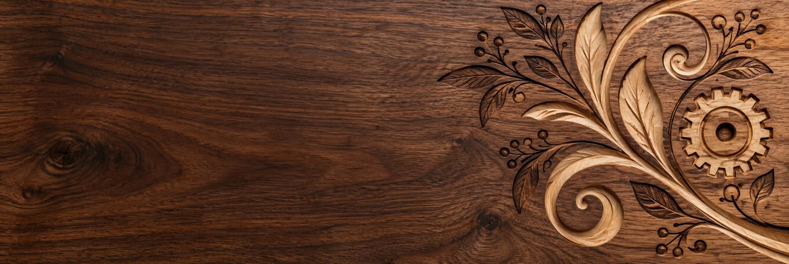

KerfKite Studio is an open-source CAD/CAM workbench for interchangeable CNC router, laser and drag-knife heads. Design in a browser, simulate a job, and prepare output for a supported controller. The Python application runs locally or as an authenticated HTTPS editor. The repository also includes a simplified Android companion.

sh scripts/install.sh and sh start.sh. On Windows, use scripts/install.ps1 and start.bat.python -m pip install ".[step]" inside the application's virtual environment.See the release report (PDF), file compatibility, controller matrix and platforms for tested scope and open work. The machine limits in the public profiles are example dimensions. Enter your measured setup before preparing a physical job.
Start with AGENTS.md and the developer handoff for the architecture, simulation and browser tests. The command names cnc-studio and cnc-studio-web and the project format pi-cnc-studio/1 preserve interoperability with existing Studio installations.
MIT covers first-party software and documentation. Fonts, the bundled parser and native runtime components have their own licences. See the licensing inventory, contributing guide and security policy.
Current development behavior; see STATUS.md for acceptance limits and USER-GUIDE.md for operation instructions.
New gears use metric zero-shift external involute teeth. Controls: tooth count, module, pressure angle (14.5–25 degrees), pitch-circle tooth thinning, centre-hole diameter and page rotation. Outside diameter is derived as module × (teeth + 2). A mating pair needs matching module/pressure angle; standard centre distance is module × (teeth A + teeth B) / 2. Thinning is per gear, so the pair's thinning adds to backlash.
Conservatively reject tooth counts below ceil(2 / sin(pressure angle)^2), oversized bores and pointed/overlapping teeth. New gear objects cannot be stretched with resize handles; regenerate using module. Existing decorative gears in old projects are not silently converted. The root uses a radial transition and circular root arc, not a generated hob trochoid. No load rating, root stress, interference sweep or physical mesh test has been completed. Use the internal outside/inside profile operation for cutter-radius or laser-kerf compensation, or export to suitable external CAM. Compensation does not establish physical gear accuracy. SVG export preserves geometry and hole-first path order. Numerical tests verify pitch thickness, tooth count and dimensions.
Reference: https://khkgears.net/gear-knowledge/gear-technical-reference/calculation-gear-dimensions/
Polygons support 3–128 sides, rotation and circular centre holes checked against actual edge clearance.
Bundled Lora, Montserrat and Cormorant Garamond fonts (SIL Open Font License) and imported TTF/OTF fonts convert to closed contours. The parser is opentype.js 2.0.0 (MIT); licenses are bundled in static/vendor. Local files work without fetch or a CDN. Text retains editable settings in the project, plus portable outlines. Custom font files must be reimported to regenerate text in another session.
Layouts: straight, vertical text down, cubic Bezier baseline with adjustable rise, letter spacing, page rotation and Y-axis rotation. Choose symmetric rise or independent custom cubic control points. Custom control X positions are percentages of text width and Y positions are millimetres; numeric fields and draggable orange handles edit the same values. Endpoints remain fixed at the baseline start/end. Settings survive text load/replace and portable projects; cusp/stationary-tangent cases are rejected. Tight curves may still overlap letters. Latin kerning and composite glyphs are supported; complex-script shaping is rejected rather than misrepresented. No automatic ligatures are applied.
Depth is separate from font style. Text creates per-vertex negative-Z contours, with shallowest depth and optional Y-axis tilt. Router CAM uses step-down limits and clearance retracts, with conservative plunge-feed speed for 3D contour segments. XYZ paths can also be exported. A rotatable 3D path view and sampled stock-removal preview are available. Separate operations provide pockets, sampled V-carving and raised/recessed text/artwork relief; solid STL extrusion preserves holes. The sampled preview is an approximation, not a collision/gouge certificate. Font style itself does not define cutter geometry or engraving depth.
1000 original built-in vector templates across 52 categories, including botanical sets, ornamental borders, mandalas, seasonal designs, nautical motifs, music, space, workshop, food, travel, garden, celebrations, animals, coasters, bookmarks, jewellery and hanging ornaments. The library displays 36 previews per page, with category/search/favourites filters. The MCP snapshot contains the same artwork. Source reference sheets have not been traced or redistributed. Existing simple motifs remain available. Foreground leaf/berry masking trims underlying vector segments, so exports do not retain hidden stem lines. Natural aspect ratios are retained for built-in previews and insertion. These are engraving contours; automatic stencil bridges, automatic one-piece cutout construction and production minimum-feature validation are not provided; manual boolean editing and CAM warnings do not replace these checks. Artwork quality still needs user review at intended production size.
studio/protocols.py separates supported export dialects from controller transport. GRBL / GRBL-ESP32 retains its output. Marlin router export omits GRBL work-coordinate/modal setup and uses millisecond dwell; the controller must have CNC spindle support configured. Both GRBL and experimental Marlin live adapters have software tests. Physical ports are disabled by default and require --enable-hardware; no physical machine was commissioned. Marlin pause stops host scheduling and may not stop already buffered motion. Marlin dynamic-laser output remains unsupported.
The separate rotary workflow exports continuous A-axis LinuxCNC G-code with diameter wrapping and seam checks; it is not a live LinuxCNC driver. The same rotary wrapping is implemented in JavaScript for supported offline contour jobs and covered by parity tests. The new file:// browser workflow was not accepted end-to-end because the automation browser blocked that URL; browser-policy blocking is not a CAM correctness result. General Mach, LinuxCNC, Duet and other live adapters remain outstanding. Do not interpret a postprocessor as a validated live controller driver.
Compensated profiles use valid closed contours and nested holes. Pockets use concentric erosion and a stepover no larger than half the cutter diameter. Sampled medial-axis V-carving is conservative and can leave material in broad regions; tool-size/inaccessible-feature warnings still need review. Heightmaps and top-access STL relief use flat/ball cutter-contact envelopes, allowances and step-downs. Undercuts, clamps, holders and out-of-stock geometry are not modeled as certified collision checks.
The optional native C++ relief kernel accelerates contact calculations while Python retains validation and the reference implementation; see NATIVE.md for measured results. No physical cut or gear mesh is established by numerical tests.
The Design panel provides an explicit multi-object checklist, edge/centre alignment and equal-gap horizontal/vertical distribution. Use selected-object bounds or the complete work area as the reference. Distribution requires at least three objects and rejects insufficient space instead of overlapping them. A single object can align to the work area. Translations preserve depth/power arrays, text settings, tool settings and gear proportions; saved gear/surface origins translate with their paths. Changes are atomic, participate in undo and invalidate previews. Full snapping/grouping semantics remain outstanding.
Closed router line/inside/outside contours can retain stock-bottom-relative tabs with a flat cutter. The requested cut reaches the stock bottom; tab height is less than stock thickness. For example, 10 mm stock with 2 mm tabs retains plateaus at Z −8 mm even if the main contour overcuts below −10 mm. Tab positions follow the compensated path's arc length; width includes one cutter diameter of plateau padding beyond the nominal width. Count-based placement or explicit percentages are supported, including closed-seam handling.
Placement is a geometric aid, not a retention/clamping guarantee: corners and neighboring cuts need review. Open paths, relief/per-vertex depths, unsupported tools/operations, overlapping tabs and oversized plateaus are rejected. Holding tabs currently require the Python server; the offline engine rejects them explicitly. Direct dragging of tab locations on the design is not implemented.
Use the project importer in the Studio editor to open a drawing from another program. Imported outlines retain their source coordinates in millimetres and start with output disabled. Check a known dimension in the editor, choose the installed head and material, and generate a new CAM preview before enabling any imported artwork for output.
| Source | How to export | What to check in Studio |
|---|---|---|
| FreeCAD, AutoCAD, LibreCAD and other drawing tools | Save an ASCII model-space DXF. Outline text before exporting. Set drawing units or select them when importing. | Layer, colour, overall size, spline/arc contours and unsupported-entity counts |
| A router CAM postprocessor | Export an absolute or incremental three-axis text program as .nc, .ngc, .cnc, .tap or .gcode | Feed contours, separate rapid approaches, work origin, depth units and the named source feed presets |
| A plotter or vinyl design program | Export plain HP-GL as .plt, .hpgl or .hpg with standard unscaled coordinates | Pen layers, pen-up gaps, available velocity presets, knife offset and source force values |
LINE, ARC, CIRCLE, ELLIPSE, SPLINE and ordinary 2D/XY polylines are converted to editable paths, including curved bulge segments and transformed nested block instances. The reader applies the drawing's declared insertion units. For a unitless drawing, Unitless DXF supplies the scale. Studio imports horizontal contours into the XY plane. Unsupported text, fills, dimensions, meshes and non-horizontal geometry appear in the skip report. Convert labels to outlines and hatches to boundaries in the source drawing if you need them. Layer colours and visibility carry into the import report. ezdxf path documentation
The importer tracks G20/G21 units, G90/G91 positioning and modal G0/G1/G2/G3 commands in the XY plane. It reads I/J centres, signed R arcs, full circles with I/J, helical Z and G90.1/G91.1 arc-centre modes. Tool changes separate source tool layers. G0 travel separates contours. An initial feed move with unknown starting XY produces a warning. Establish the starting position explicitly for incremental motion. Within Studio's supported depth range of −50 to 0 mm, varying cutting Z stays attached to each vertex. Other known Z values are retained as reference metadata. Rapids, stationary drilling moves and dwell timing do not form artwork. Controller macros, rotary axes, cycles, probing, coordinate resets, unsupported modal instructions and other ambiguous geometry stop the import with a line number. LinuxCNC G-code reference
The reader supports IN, DF, SP, PA, PR, PU, PD, CI, AA and AR, with semicolons between instructions. Separate pen selections become layers. Drawn arcs use the same chord tolerance as other imported circular motions. VS velocity in cm/s produces a named mm/min feed preset when it fits Studio's feed range. FS values appear in the report in their source units. Review pressure on the target machine. Device-specific scaling, page coordinates, transformations, text and raster commands require conversion in the plotter software. Ordinary unscaled HP-GL uses 40 units per millimetre. HP PCL Implementor's Guide, glossary
Save the following text as motif.plt and open it using the project importer.
IN;SP1;VS2;FS5;PU400,400;PD800,400,800,800,400,800,400,400;PU;SP2;PU600,600;CI80;PU;
The first pen makes a 10 × 10 mm square starting at X 10, Y 10. The second makes a 4 mm circle centred at X 15, Y 15. The review includes a 1200 mm/min source feed and a force value of 5 in source units. Select the knife head, inspect the outlines and adjust CAM parameters for the intended cutter.
Imported artwork fits Studio's portable project limits of 3000 paths, 100000 vertices and coordinates within ±2000 mm. Circular toolpaths target 0.025 mm chord error. DXF uses ezdxf's path approximation and flattening with a 0.025 mm target. Convert very large drawings to the relevant work region and relocate distant survey or building coordinates before import.
Choose a self-contained LinuxCNC .ini file and select Review import. The reader uses explicit [TRAJ]LINEAR_UNITS and [AXIS_X] / [AXIS_Y] minimum and maximum soft limits. A workspace width equals maximum X minus minimum X, including machines with negative travel coordinates. Z range, axis velocity and acceleration appear as measured-unit reference values when present. Applying the imported workspace changes the Studio drawing dimensions. INI files using external include statements require a resolved copy with the axis limits in the same file. LinuxCNC INI reference
Choose a .lbzip in Projects → Import artwork and settings, then select a supported member for review. Studio reads device profiles, preferences, material libraries, settings and project files present in the archive. Other bundle components are counted as skipped. An ordinary LightBurn bundle export omits standalone project files. Archives support up to 4 MB compressed, 256 members and 16 MB expanded in total, with up to 4 MB per supported member. The reader keeps archive data in memory. LightBurn User Bundles
The current release review and file compatibility guide supersede the historical implementation column below. Track remaining items against the acceptance criteria.
Every row requires implementation, regression fixtures and user workflow acceptance. Hardware-dependent rows also require commissioning on the machine. “Planned” is not implemented.
| Area | Required capabilities | Current status |
|---|---|---|
| Geometry | Shapes, pen/Bezier curves, node editing, snapping, dimensions, rotate, mirror, group, align, distribute, arrays, offsets, booleans, weld, undo/redo | Shapes including polygons/involute gears, move/resize, rotation/mirror, arrays, basic Bezier/node editing, offsets/booleans, multi-object alignment/equal-gap distribution and undo/redo implemented. Full snapping/group/document semantics remain incomplete. |
| Typography | System font discovery, editable text, kerning, text on path, weld/outline conversion, single-line fonts | Three bundled outline fonts and TTF/OTF import, retained text settings, kerning, straight/down/Bezier layouts, rotations and depth paths implemented. Independent numeric/draggable cubic baseline controls implemented. System discovery, single-line fonts and complex-script shaping remain incomplete. |
| Import/export | SVG, DXF, bitmap images, PDF vectors; retain units and discontinuities; documented project format | Restricted SVG, DXF, LightBurn vector projects and settings, HP-GL, supported CNC instruction files, STEP, PNG/JPEG, heightmaps, STL relief and Studio project imports. SVG/G-code/XYZ/STL/STEP exports. PDF vectors, native commercial cutter formats and full SVG coverage remain open. |
| Layers | Object-to-layer assignment, ordering, per-layer speed/power/pass/fill settings, output enable, material library | Ordered per-object operation settings, output enable/reorder and local tool/material presets implemented. Full document/layer model and continuous tool changes remain incomplete. |
| Laser vector | Line, fill, offset fill, cross-hatch, interval/angle, overscan, perforation, kerf, tabs/bridges | M4 lines, tangent leads and sampled ramps, kerf-compensated profiles, hatch/crosshatch and ordered settings implemented. Geometry-aware curved leads, perforation and automated bridges remain incomplete. |
| Laser image | Grayscale, threshold, dithering, brightness/contrast/gamma, invert, crop/masks, bidirectional raster, overscan, variable power | Grayscale, threshold, Floyd–Steinberg dithering, inversion, interval, bidirectional raster and zero-power overscan implemented. Tone adjustment, crop, alpha, ellipse and selected artwork masks are covered in the laser workshop. |
| Job optimisation | Travel minimisation, inside-before-outside, directional rules, duplicate removal, cut order preview, accurate machine-calibrated time | User operation order, hole-first area paths and opt-in layer-aware line ordering with exact duplicate removal. Machine-calibrated time and optimization across all operation types remain open. |
| Camera | Capture, lens/bed calibration, overlay, trace placement, saved calibration per machine, fiducial registration | Camera/image outline and centreline tracing implemented with user-specified dimensions. Four-landmark projective bed registration, an image overlay and registered trace placement are implemented. Lens distortion and measured physical accuracy remain open. |
| Machine UI | Jog, home, origin modes, framing, console, alarms, overrides, safe hold/abort, progress, stored device configuration | Software-tested GRBL/Marlin transport, simulator, manual/keyboard/standard-gamepad jogging, hold/reset and progress. Physical ports require explicit opt-in; hardware commissioning remains outstanding. |
| Rotary | Diameter/circumference, axis mapping, preview, per-machine calibration | Continuous A-axis LinuxCNC export, diameter wrapping, exact-turn seam checks, periodic borders and offline contour wrapping implemented. JavaScript/Python parity tested; new direct file-browser acceptance blocked by automation URL policy. No live rotary sender or arbitrary four-axis surface machining; wiring/calibration remain unverified. |
| Libraries | Materials, reusable artwork, templates, variables, serial numbers, barcodes/QR, material tests | 1,000 original templates, a feed/power test grid, custom creator/manager, local material/tool presets and portable project/library files implemented. Variables, serial numbers, barcodes/QR and full material-test workflows remain incomplete. |
| CNC CAM | Centreline engraving, tool library, depth/step-down, profiles with compensation, pockets, adaptive/clearing strategy, tabs, ramp/helix, drilling, V-carving, surfacing, 3D relief | Compensated profiles/pockets, stepped and varying-depth contours, sampled V-carving, image/STL relief with flat/ball contact and sampled preview implemented. Holding tabs support closed flat-cutter router contours with count/explicit positions. Adaptive clearing, direct-on-contour tab dragging, ramp/helix and drilling cycles remain outstanding. |
| CNC setup | XYZ probe, tool-length measurement, tool change workflow, stock/clamp model, work coordinate systems, feeds/speeds, spindle control | Stock/depth limits, origin commands and independent manual tool-change stage plans implemented. No automatic probing/tool changer, fixture collision certification or automatic staged-job continuation. |
| Shared machine | Head identity, configuration readback, laser/router mode transitions, air assist/dust extraction, head offsets, shared XY registration, per-head focus/tool-zero, explicit remount procedure | Explicit head mode workflow switches outputs off, requests GRBL mode and requires readback/setup. Physical head switching, air assist, offsets and registration are not commissioned. |
| Extensibility | Multiple machines, GRBL capability discovery, original xPRO adapter, FluidNC/grblHAL adapters, plugin boundaries, touch UI, portable packaging, import migration | GRBL/GRBL-ESP32 and experimental Marlin live adapters; separate rotary LinuxCNC export. Mach, FluidNC/grblHAL-specific and other live integrations remain outstanding. |
| Release quality | Offline operation after install, recovery from connection failures, reproducible builds, ARM64 performance, documentation, accessibility, licence checks, regression corpus | Local regression/browser checks, Mac/Pi native relief validation, bounded Pi stress tests, installation/user/help documentation. Full platform acceptance, accessibility, reproducible/signable distributions and hardware acceptance remain outstanding. |
“Full LightBurn parity” includes software workflows applicable to the target machines. Support for other hardware families (Ruida/Trocen/galvo etc.) needs separate protocol adapters and hardware tests; it is not supplied by an xPRO GRBL adapter. Proprietary LightBurn project-file round-tripping is not yet implemented or promised as lossless.
Shaun Price's Studio code and project documentation use MIT. Keep the copyright and permission notice with copies. The font licences, upstream software licences, and permission to publish a specific recording follow the material they cover. Studio MIT licence
| Artefact | Evidence checked on 18 November 2026 | Distribution terms |
|---|---|---|
| Source repository | First-party Python, C++, Java and JavaScript, geometric template generators, docs, bundled font/parser files, Gradle wrapper, screenshots and generated branding | Preserve MIT and third-party notices. The public source edition omits recorded marketing audio and video. |
| Studio wheel for macOS ARM64 | ZIP member inspection of the 0.2.0 CPython 3.12 wheel found the Studio native relief extension, static fonts/parser, templates and MIT file. Python geometry/runtime wheels and marketing audio/video are separate. | Include MIT and the bundled font/parser notices when copying, mirroring or extracting static assets. The updated vendor directory also carries OCCT and OCP notices. |
| Android source and APK | Studio Pocket declares no external app dependency. Gradle 8.9 wrapper JAR embeds its Apache licence. The debug APK contains Studio DEX/resources and an MIT licence asset. SDK, Gradle, desktop fonts, STEP libraries and the marketing track are outside the APK. | Keep Android source headers and the embedded assets/LICENSE.txt in the application. The wrapper and build tools have their own terms. Gradle licence information |
| Local source install and HTTPS service | pip resolves dependencies on the installation host. The reference CPython 3.12/macOS ARM64 resolution included 83 external distributions for base + web + step + mcp. | Package metadata is an index. Keep libraries' own notices and review the native payload of any wheel you redistribute. The resolved list records version, declared licence, reference wheel SHA-256 and release URL. Resolved dependency inventory |
| Self-contained installer, wheelhouse or Pi image | Platform wheels can contain other projects' code and libraries. An installed venv on one Mac does not establish the contents of other OS/architecture builds. | Before distributing that binary set, inventory its exact versions and payloads, preserve notices, provide applicable corresponding source/build information and honour library replacement rights. A pip install performed by the user and a vendor shipping copies have different artefacts to review. |
The bundled minified opentype.js matched the upstream 2.0.0 npm distribution byte for byte. That distribution embeds tiny-inflate 1.0.3. The accompanying vendor directory now includes the MIT notices for opentype.js and tiny-inflate and the zlib notice for the tinf decoder from which tiny-inflate was ported. opentype.js release · tiny-inflate release · tinf licence
All three TTF payloads decoded from studio/static/vendor/fonts.js matched their respective upstream variable fonts byte for byte. Each retains its copyright notice and SIL Open Font License 1.1. The Lora notice reserves the name Lora. Keep these texts when moving the offline editor. Observe the OFL rules for modified fonts and reserved names. Ordinary designs made using the glyphs may use the designer's chosen licence. Lora · Montserrat · Cormorant Garamond · OFL FAQ
The template generators and geometry snapshot are project artwork. The authoring record identifies the supplied reference sheets as inspiration. They are absent from the tracked release. User-imported art, fonts and STEP models retain their existing rights. Independently drawn recognisable landmarks may still have trademark, depiction or merchandising restrictions in a particular use. A licence to the drawing code cannot grant another party's brand rights. Template provenance · Eiffel Tower image-use guidance
cadquery-ocp-novtk. The tested 7.9.3.1.1 wheel's metadata says Apache-2.0 for the bindings. Its Mach-O libraries include the OCCT 7.9.3 kernel under LGPL 2.1 with the Open CASCADE exception. The exception concerns incorporation of material from headers and requires acknowledgement. Redistributing OCCT binaries still carries LGPL obligations. Supply the library licences, applicable corresponding source or compliant distribution arrangement, preserve notices and permit replacement/relinking and debugging of library modifications as the LGPL requires. Retain actual build and patch information corresponding to the binaries. OCP licence · OCCT 7.9.3 licence · OCCT exceptionLICENSE_GEOS identifying LGPL 2.1. Preserve those notices, source access and library-replacement rights when distributing the libraries. Manifold 3.5.5 carries Apache 2.0 and an AUTHORS file. ezdxf 1.4.5 uses MIT. Retain the FontTools external licence file when distributing its font tools. Shapely · GEOS source · Manifold licence · ezdxf licenceTo refresh the inventory in a build environment, run python -m pip install --dry-run --ignore-installed --report resolved.json ".[web,step,mcp]". Use the target OS, architecture and Python for each build, inspect the actual archives, and retain licence files even when a package's metadata reports a single permissive identifier. The recorded resolver output describes a specific platform and date.
The feature matrix records capabilities and open work. See the release verification, format compatibility, controller support and platform measurements. Device commissioning requires an independently measured work envelope, tools, clearances, work origin and controller settings.
Assuming the official Raspberry Pi AI HAT+ 13 TOPS: this is a Hailo-8L INT8 inference accelerator. Raspberry Pi provides supported camera inference examples. It is not a general-purpose GPU or extra system RAM, and ordinary geometry/CAM code does not automatically run on it.
Recommended initial use: a fixed overhead camera feeding an optional local vision worker, reporting observations to the workstation and phone.
AI observations must remain distinct from motion control and physical interlocks. Do not use visual inference as the sole fire protection, E-stop, tool-clearance or tool-identity gate. An alert should show its timestamp, confidence and camera availability. Automatic motion actions would need a separately validated policy.
The 13 TOPS HAT runs supported compiled models; custom model training and compilation are separate workflows. No inference FPS, accuracy or actual HAT connectivity has been measured for this project. Do not install or change the adjacent AI Trainer project as part of this proposal.
For other hosts, keep inference behind a provider interface (CPU, optional Metal-capable backend, optional other accelerators). No Metal backend is implemented today. The CNC application must function without AI hardware.
The editor now captures camera images or imports image files for outline and centreline tracing. This is conventional image processing, not Hailo inference. Physical dimensions are entered by the user; lens/bed calibration, registered overlays, fiducials and reliable stock/tool identification remain outstanding. Camera tracing does not authorize motion or replace setup checks.
A bounded CAM stress test on the real Pi 5 with 8 GB completed a complex 256×256 relief fixture generating 135,886 G-code lines. Across 62 complete matching jobs, peak sampled temperature was 72.7°C, available system memory stayed above 6.2 GiB, swap use was zero and no throttling flags were reported. That test measured the calculation workload, not the full browser/UI, live control and camera pipeline together. See the stress report.
A subsequent installed optional C++ extension reduced the same fixture's complete calculation median from 2.864 s to 1.818 s, with matching G-code. The earlier standalone prototype results are historical; NATIVE.md records the integrated implementation and evidence. No Rust or HAT CAM acceleration comparison has been performed.
These results support the Pi 5 / 8 GB for the tested workload, not unlimited models or full-parity capacity. Large meshes, finer stock previews and simultaneous vision can increase CPU/memory demand. The application imposes work caps; future background/chunked CAM and full combined-workload performance still need engineering and measurement. Use active cooling for sustained processing and validate intended workloads on the deployment host. The HAT cannot substitute for CPU CAM capacity or physical commissioning.
Primary references checked 11 September 2026:
Local stdio server built with FastMCP 3. Optional dependency; the normal UI does not require it. This server creates artwork and files, not machine motion. It has not been registered in Claude Desktop, Codex or a hosted ChatGPT connector.
From the project directory:
.venv/bin/python -m pip install '.[mcp]'
.venv/bin/python -m studio.mcp_server --output-dir ./artifacts
On Windows use .venv\Scripts\python.exe instead. Use Python 3.12 for the currently tested dependency set. A local MCP client launches the process and communicates over stdin/stdout; the command is not a web server. Logs go to stderr. No remote HTTP endpoint, OAuth service or MCPB bundle is provided yet.
Example client configuration, after installation (replace all paths for your machine):
{
"mcpServers": {
"cnc-studio-artwork": {
"command": "/absolute/path/cnc-studio/.venv/bin/python",
"args": ["-m", "studio.mcp_server", "--output-dir", "/absolute/path/cnc-studio/artifacts"]
}
}
}
Windows uses an absolute path ending in .venv\\Scripts\\python.exe. Client configuration syntax varies; the essential contract is that executable, arguments and stdio transport. No account configuration was changed by this implementation.
| Tool | Purpose | Writes |
|---|---|---|
list_templates |
Search the 79 original built-ins by query/category | No |
get_template |
Obtain scaled, positioned XY geometry for a template ID | No |
create_artwork |
Create SVG and .cncstudio.json project files from ordered polylines |
Unique local files |
save_template |
Create .templates.json for import into the browser library |
Unique local file |
preview_job |
Validate using the same CAM generator as the UI, returning bounds/warnings/sample G-code | No |
export_gcode |
Generate an .nc file using current CAM |
Unique local file |
Resource: cnc-studio://artwork-guide.
The assistant supplies geometry or composes retrieved templates. This is not an integrated generative-image model and does not automatically vectorise bitmap images. The browser's polygon/gear generators are currently UI tools; MCP can accept their exported polylines but does not expose dedicated parametric gear generation yet.
Coordinates are millimetres, positive XY from the bottom-left of the work area. Each path is a distinct polyline; repeat the first point at the end to close it. Put centre holes before outer outlines. Generated project files preserve object geometry; importing the SVG separately uses the UI's current SVG scaling rules instead.
Open .cncstudio.json using Open project, or import .templates.json using Template library → Import library. Browser library storage and MCP artifact files are separate. Template files contain geometry, not material cutting settings.
Default speed/power values are placeholders. The shared CAM supports compensated router profiles, pockets, sampled V-carving, knife offset paths, laser hatch and supplied per-vertex router depths/powers. Send the operation and tool parameters as part of the project; ordered operations must retain a compatible head, protocol and cutter. There is no dedicated MCP tool for importing heightmaps/STL, calculating relief contact, generating parametric gears, camera tracing or rotary export. Use the relevant browser/server workflow first and supply supported prepared paths when appropriate. create_artwork itself accepts XY polylines and supplies placeholder laser settings, not a complete material-specific CAM plan. MCP does not bypass physical commissioning. It never opens serial ports or sends machine commands.
All outputs have generated unique filenames beneath the output directory chosen at server startup. Tool callers cannot specify arbitrary file paths or overwrite existing documents. Large geometry is bounded to the same limits as the UI.
PYTHONPATH=. .venv/bin/python validation/mcp_smoke.py starts a separate real stdio MCP process and uses the MCP SDK to initialize, list tools and exercise all six tools. It creates files in a temporary directory. The successful local result is in validation/mcp-smoke.json. This verifies local protocol operation on Mac; it is not proof of installation in a specific assistant client or on Windows/Linux/Pi.
Studio Pocket is a native, offline vector sketch editor for Android 8 and later. It uses a touch canvas and numerical dimensions. Files saved from the app open in the desktop and Raspberry Pi workstation. The current template, solid modelling and machining workflows run on that workstation.
Build the debug APK using Android Studio with JDK 17 or newer, Android SDK Platform 35 and Build Tools 35 installed. Open the repository’s android directory as the project. Alternatively, from the android directory run:
./gradlew assembleDebug
On Windows run gradlew.bat assembleDebug. The first build fetches the pinned build tools. Subsequent builds can use --offline once the dependencies are cached. The installable debug APK appears at app/build/outputs/apk/debug/app-debug.apk. Transfer the APK to the phone and open it from Files, or choose Run in Android Studio with your development device selected.
Quick guide inside the app walks through these same controls. Clearing app data deletes its private draft. Use the system file picker to keep a portable copy.
A draft supports up to 128 objects. The phone retains primitive dimensions in its local draft. Portable project files contain sampled paths for compatibility with the workstation. The phone currently has one local draft and exports through Android's document picker; it does not reopen project files from other devices. Its only Android activity is the editor. The manifest requests no network or external storage permissions.
Use this guide with the user guide, current acceptance status and HTTPS setup. Simulator results, browser tests and successful file transfers do not establish physical machine behavior.
Download the current .cncstudio.json project before restarting, refreshing or changing browser storage. Save the exact error text and a screenshot of the relevant settings. If motion or powered output is unsafe, use the machine's physical emergency-stop procedure; a browser refresh or network disconnect is not a stop command.
When asking for help, include:
file:// mode.Do not include passwords, pairing/upload tokens, certificate private keys or complete unrelated private documents.
| Symptom | Check and next action |
|---|---|
| Connection refused at the app URL | Confirm the intended server is running and read its actual host/port from the terminal. A saved browser URL may point to an old development port. |
ModuleNotFoundError or missing package |
Use the project's intended Python environment and reinstall the documented dependencies. python -m pip and the app must use the same interpreter. |
| Port already in use | Identify the existing Studio process or choose another explicit port. Do not terminate an unknown service simply to free the port. |
| Tools appear missing | Check the left and right tabs. Design/Text/Images/Templates/Projects/Objects are separate from CAM/3D relief/Rotary/Control/Quote. |
| Tabs are absent or scripts fail | Keep all static files together in filesystem mode. In server mode, save first, restart the updated service and reload. Inspect the first browser-console error for a missing script or stale/mixed build. |
| “Restart CNC Studio and reload” | The browser has newer controls than the running server supports. Save the project, restart the correct process, then reload its URL. |
| “Advanced operation requires the app server” | The direct-file build supports basic contour CAM but not all server operations. Open the saved project in the local/HTTPS server for area CAM, relief, extrusion, simulation or rotary export. |
Browser warning about --disable-blink-features=AutomationControlled |
This comes from how Chromium was launched, not from CNC Studio. Open the app URL in your normally launched browser. Studio does not require this flag. |
Cancel an active drag with Escape, select the object again and inspect the object list for another overlapping/open path. Save the project before refreshing. If a reload resolves the drawing but the issue recurs, capture the object geometry and exact move/resize sequence. Do not treat disappearance after refresh as proof that the underlying bug is fixed.
Check the browser profile, hostname, protocol and port. They affect storage identity. Hosted libraries are also separated by username. Private browsing, browser cleanup and site-data deletion can remove IndexedDB/localStorage records. Do not clear site data as a first repair step.
Use Projects → Recover latest draft if available, inspect saved revisions, or reopen a downloaded project. Drafts are delayed and there is only one latest draft per namespace; they are not a complete backup history. A template-library JSON export is separate from a project file.
Download a portable project immediately. Check the browser's storage permissions/quota and whether private browsing restricts IndexedDB. Close other Studio tabs if a database upgrade is blocked. The portable project limit is 4 MB; split very large artwork rather than assuming a larger server upload limit guarantees it can be reopened as a project.
For edits made in several tabs, keep separate downloads before choosing which version to retain. The browser library does not merge concurrent project edits.
Studio supports a restricted SVG geometry subset. Convert text, transforms/effects or unsupported compound structures to compatible plain paths in your source editor, then retry a small example. Full DXF/PDF/SVG document support is not implemented. Missing font glyphs and unsupported complex-script shaping are reported; import correctly shaped outlines rather than substituting arbitrary characters.
Custom font outlines travel with a project, but the font file must be imported again to regenerate the text. Check that you selected a supported TTF/OTF and that it is within the size limit.
Change module and regenerate instead of stretching a gear. Check the conservative minimum tooth count for the pressure angle, bore clearance and tooth thinning. Old decorative gear objects are not equivalent to new involute gears. A successful geometry preview is not a meshing/load test; cutter diameter, kerf, backlash and actual centre distance matter.
Distinguish old/simple templates from the newer occlusion-aware botanical group. Inspect the actual exported paths at production size. Templates are engraving geometry, not automatically bridged stencils or unioned one-piece silhouettes. For a reproducible crossing, include the template name and a minimal exported project. Do not hide a line visually and assume it has been removed from G-code.
| Symptom | Check and next action |
|---|---|
| Camera button reports unavailable/denied | Use a supported browser on HTTPS or localhost, allow camera permission and check whether another application owns the camera. Image upload remains available. |
| Camera is open but Capture is unavailable | Wait for a usable video frame. Stop and reopen if the device has disconnected. Closing the trace section or leaving the page releases its tracks. |
| A black stroke becomes two outlines | Choose Stroke centrelines, not Closed shape outlines. Outlining both edges of a thick stroke is expected in outline mode. |
| Centreline has spurs or missing short branches | Improve contrast/source quality and adjust the minimum stroke length. Thinning is pixel-based; it is not automatic reconstruction of an ideal pen stroke. Preview before adding. |
| Small holes disappear | Outline filtering uses minimum area and applies to holes too. Lower the minimum feature value and preview again. |
| “Too noisy” or complexity-limit error | Clean the image, adjust threshold/inversion, crop unrelated content externally or reduce small features. The trace is capped rather than producing an unbounded job. |
| Trace is stretched or wrong physical size | Width/height map the whole image rectangle. Match its aspect ratio and an independently measured size. The camera has not calibrated that measurement. |
| Picture is skewed relative to the stock | Correct perspective/lens effects externally or retake the picture square-on. Bed registration and lens calibration are not implemented. |
| Raster is outside the work area | Include the zero-power overscan on both sides in your placement. Reduce width/overscan or move the image inward. |
| Raster exceeds the pixel limit | Increase interval or reduce physical dimensions. Preview and generation have additional segment limits. |
Area operations need valid closed regions. An imported open centreline belongs in a line operation. Repair self-crossings, duplicate/canceling contours and zero-area shapes before using profiles, pockets, hatch fill or V-carving. Even-odd nesting creates holes; overlapping shapes can cancel in the filled region.
For a fit error, compare tool diameter with the actual feature width. Reducing the numeric diameter without changing the physical cutter creates an incorrect toolpath. Use a suitable tool or change the design. Internal corners narrower than the cutter cannot be machined sharp by that cutter.
Use a stepover no larger than half cutter diameter. Inspect inaccessible corners and narrow regions even when the stepover passes validation. Concentric pocketing is not adaptive clearing, and the tool must support the generated plunge entry. V-carving can also leave wide flat areas; it is not automatically a complete flat-clearing strategy.
Text outline depth and filled relief are separate workflows. Select V-carving, raised/recessed relief or the relevant area operation for the desired result. Y tilt varies the depth across text; it does not automatically generate a solid or a pocket. Review whether the chosen operation uses a flat cutter or a V-bit, and keep tool changes in separate jobs.
Reduce grid resolution or increase stepover while preserving the required feature detail. The contact calculation uses conservative cell envelopes, so coarse maps can leave extra material deliberately. Use appropriate resolution and allowance for roughing/finishing review. Smaller tools and more rows can increase contact checks sharply; complexity limits reject work beyond the bounded workload.
The UI identifies C++ accelerated relief versus Python relief. To check the optional extension in the same environment as the server:
python -c "from studio import _relief_native; print(_relief_native.__file__)"
If that import fails, the native extension is not installed in that interpreter. The Python backend remains available. Rebuild using the documented compiler/install process for that platform, then restart the server. A native build is specific to its Python/OS/architecture; copying a macOS binary to a Pi or Windows installation will not work. Native acceleration covers the relief kernel, not every CAM operation or all browser interactions.
The preview samples the stock and can miss fine details. It does not check holders, clamps, the chuck, tool deflection or every swept-volume collision. The STL workflow is top-access height-field machining, not undercut/multi-axis machining. Record the resolution, tool shape, allowance and source model when reporting a mismatch.
Check that every enabled object uses the same head, protocol, work area and compatible cutter geometry. A continuous file cannot silently swap a flat cutter for a V-bit or a different diameter. Split those into separately reviewed jobs. Remember that an object's assigned settings can differ from the currently visible global controls; clear/reassign its operation if needed.
| Symptom | Check and next action |
|---|---|
| Rotary export asks for router/GRBL source | Select router mode and GRBL source geometry. The export converts that source into LinuxCNC G93/A-axis instructions; it is not sending GRBL rotary commands. |
| File cannot be run by Studio's normal sender | Expected: rotary is export-only for configured LinuxCNC hardware. Current GRBL/Marlin senders do not support this file. |
| Seam endpoint check fails | Check the π × diameter design span and align opposite-edge endpoints in axial position and depth. The comparison tolerance is 0.01 mm. |
| Seam check passes but physical seam is wrong | Measure the real diameter and verify seam zero, axis direction and physical alignment. The endpoint check does not establish tangency or compensate an inaccurate stock diameter. |
| Rotary uses X instead of the other design axis | Expected: the unwrapped design coordinate becomes axial X; A rotates around X and Z is radial. Check the target machine configuration before execution. |
| Angles exceed 360° | Expected for a continuous unwrapped A axis. Do not apply modulo-360 rewriting: it can change the intended movement direction/path. |
| Cut crosses the cylinder centre | Reduce depth or use an appropriate cylinder; the exporter rejects Z at or beyond the centre radius. |
The rotary preview remains planar. G93 preserves nominal unwrapped movement timing; actual surface speed changes with radius, and the target controller's acceleration/axis limits still matter.
The server defaults to simulator-only. Physical use requires explicit --enable-hardware; adding that flag is not calibration or commissioning. Check the selected protocol, OS serial permissions, cable and whether another sender has the port open. A power-only USB cable does not provide a serial connection. Disconnect before switching protocols.
Wait for settings readback. Check $32 against the actual head and $30 against the intended S/RPM command range. A 25 W optical laser rating is not an S-value of 25. Check work-area dimensions against current controller travel and the physical setup. Do not blindly apply an old settings export from another machine.
After changing a head, verify its mounting and re-establish focus/Z and work zero. The confirmed head-mode command turns powered outputs off while applying the supported mode change; it does not determine the new tool length or stock surface automatically.
Marlin uses different initialization, acknowledgements, homing and zero commands. It needs firmware configured for the intended CNC spindle functions. Studio waits for an acknowledged M400 before claiming job completion; ordinary ok responses are not proof that all buffered motion has finished. Live physical compatibility remains a commissioning task.
Treat motion and output state as uncertain until checked locally. Record the last accepted command and controller log. Resolve the underlying connection/firmware issue, reconnect when required and re-establish the necessary origin/setup before generating or starting another job. Do not automatically replay an ambiguous job from the beginning: part of it may already have executed.
For Marlin, a long blocking command can exceed the configured acknowledgement timeout. Its fault handler requests M112, but immediate processing depends on firmware emergency-parser behavior. Do not repeatedly increase timeouts to hide a failing connection.
Use a local server session, enable manual input and confirm the controller is connected, idle and not running a job. The page must have focus, and text inputs must not have focus. Key-repeat is ignored. OS/browser shortcuts may reserve some keys.
Use a gamepad with browser-standard mapping. Press a button, refresh the device list and select it. After enabling or changing mapping, release the hold-to-jog button, centre the stick, then hold it and deflect for one increment. Centre again before the next increment. Gamepad steps are capped at 1 mm, one axis at a time. Focus loss/disconnection disables input. Dedicated XHC pendants are not supported by this browser-gamepad adapter.
If the feed is rejected, use a feed accepted by the selected controller's jog guard. The manual panel's upper bound does not override a stricter driver limit. Test direction/mapping with the simulator and then a commissioned, supervised setup.
| Symptom | Check and next action |
|---|---|
| No login/password works on a new install | There are no default credentials. Create a user with the setup CLI, choosing a password or using its secure generator. |
| Forgotten password | Use the operator reset-password command from WEB.md. It revokes that account's sessions/upload tokens; issue replacement upload tokens where needed. |
| Certificate warning or rejected HTTPS connection | Check certificate expiry, hostname/IP SAN, matching key and client trust. Trust the intended self-signed certificate explicitly or install a trusted certificate. Do not disable verification as the fix. |
| HTTPS request rejected for host/origin | Open the configured public HTTPS URL exactly. The service expects that origin and direct TLS/TCP passthrough; forwarded proxy headers are not implicitly trusted. |
| Session expired or CSRF/reload error | Download unsaved artwork first, then log in/reload. A session has idle and absolute expiry. |
| Login throttled | Stop repeated attempts, confirm the account details and allow the throttle window to expire. Use operator password recovery if needed. |
| No receiver destination appears | Configure it on the hosted server with the receiver-issued upload token, then restart to load the destination configuration. |
| File upload receipt missing/timeout | Inspect the Pi receiver inbox before retrying. A failed response can occur after the file was stored. Successful receipt confirms file checksum/size, not execution. |
file:// upload blocked |
The receiver needs --allow-file-upload, the browser must trust its HTTPS certificate and the upload token must be valid. Browser private-network/CORS policies may still restrict the flow. |
| Receiver storage full | Download needed files, then delete unwanted server copies. Quotas apply per account; never assume deletion creates a separate backup. |
| Phone Start is unavailable | Generate and confirm a job at the local workstation, then arm it. The one-use arm must still be valid and the controller ready. An upload does not arm a job. |
| Phone displays stale/disconnected data | Check connectivity and the running monitor; do not infer a successful pause/stop from missing updates. Check the machine locally. |
| Phone pairing fails after restart | Restarting generates a new pairing token. Use the new pairing link. |
The account-based HTTPS editor and bearer-token phone monitor have different purposes. The monitor can use HTTPS with both certificate/key options; without them it uses plain HTTP on a trusted LAN. Do not expose the plain HTTP monitor through public port forwarding. The hosted receiver's upload tokens only store files, while the paired monitor can act on an explicitly armed job.
Check quantity, per-unit versus per-order fields, time multiplier, travel/startup allowance, currency and tax. Margin is not markup: a 20% gross margin means cost divided by 0.8, not cost multiplied by 1.2. Preview cutting time excludes several real production costs.
If a quote/design does not print, allow the print popup and use the browser's PDF/printer dialog. For 1:1 designs choose tiled A4 landscape, set the final print to 100%/actual size and measure the 50 mm reference. Disable driver/PDF fit-to-page scaling. A correctly sized SVG/PDF does not guarantee the printer used the same scale.
Full LightBurn workflow parity, robust general DXF/PDF import, complete SVG semantics, camera calibration, arbitrary complex-script text shaping, dedicated XHC pendant integration and additional live controller ecosystems are not complete. Advanced CAM does not have full filesystem-mode parity. Tool changes/probing, production-grade clamp/holder collision checking and optimized industrial toolpath strategies remain separate gaps.
Cross-platform builds, independent internet-service security acceptance and physical machine/gear/laser/knife/phone-stop testing must be tracked as their own evidence. Consult STATUS.md for the current record rather than treating the existence of a button or a passed unit test as deployment acceptance.
Open 3D CAD → Assembly mates & interference in the running Studio app or hosted editor. You can fit a shaft to a bore, place a fixture plate or check the fit of several modelled components. Dimensions use millimetres and rotations use degrees.
20, 15, 0 to 24, 15, 0 and choose Solve & check. Both parts turn red. The report identifies the interfering pair and gives their common volume in mm³.20, 15, 0. Set Shift in datum XYZ to 0, 0, 3 and solve. The shaft slides along the bore. Drag the view or focus it and use the arrow keys to orbit.Build a part in 3D CAD. Open the assembly and choose Insert current solid to capture its parametric feature history in the project. Give it a name and click Rename part. Repeat for additional parts. To feed a revised solid into an existing instance, select it and click Replace selected geometry. The part keeps its local datum and mates.
Independent parts have a world origin and XYZ rotation. To constrain a part, select it, choose its parent under Mate to, and enter datum origins and orientations in each part’s own coordinates. Each datum's Z axis defines its normal or joint axis. Rotations apply about X, then Y, then Z. Opposing face normals can be matched by rotating one reference frame by 180° about its local X or Y axis.
| Mate | Allowed motion |
|---|---|
| Fixed frames | Coincident origins and matching orientations. |
| Coincident planes | Translation along parent datum X and Y and rotation about Z. |
| Concentric axes | Translation along the common Z axis and rotation about Z. |
| Coincident points | Rotation about all three axes at the shared point. |
Moving a parent moves its descendants when you solve. The solver supports directed trees with one driving mate per child. It rejects cycles, duplicate assignments and input on locked axes. Independent roots give you multiple subassemblies in the same document. To release a mate, choose Independent placement and enter the desired world pose. Release child mates before removing their parent.
Studio uses bounding boxes to shortlist pairs, intersects the transformed manifold solids and measures any positive overlap over 0.000000001 mm³. Contact within 0.000001 mm is reported separately. Contact and overlap are computed on the solid kernel's tessellated geometry. Curves are approximated by facets. Fit tolerances should account for that approximation and the manufacturing process.
This check describes the assembled pose. Moving through intermediate positions, evaluating machine travel and toolholder clearance requires a separate motion analysis. The solver accepts up to 24 part instances and 150,000 triangles across the assembly. Project files store parametric inputs and mates; reopening the assembly rebuilds the preview.
Use the 3D CAD tab in the running Studio application. An extrusion uses XY coordinates in millimetres. A revolution uses radius and Z, and revolves around the local Z axis. The feature’s Position and rotation settings place it in the part.
peak under New parameter and click Add parameter. Enter 20 as its value.peak parameter to 28 and check the new corner position. Give two vertices the same Y parameter to maintain a horizontal edge, or the same X parameter to maintain a vertical edge.peak / 2 in a sketch point’s numeric field in the feature inspector. The sketch plane preserves that expression while you drag the other axis. Choose Release axis to replace the expression with its current numeric result.Fit sketch recentres the drawing. Remove vertex removes the selected point from the draft. Cancel sketch discards edits made in the open dialog. After applying, use Undo CAD edit to revert the change. Save the project to retain the points, expressions and named parameters.
Each feature accepts one closed polygon of 3–256 distinct vertices. Edges must enclose a positive area and must not cross each other. Revolution profiles require nonnegative radii. Use a second subtractive feature for a hole. The editor supports straight edges, grid snapping and parameter-driven coordinates. Tangency, dimensional solving for free curves, and sketch fillets are outside this editor’s current scope.
The Fixture clearance panel in CAM checks the tool and holder against measured clamp boxes along every move in the generated XYZ program. Use the app server or hosted editor. Each result identifies the G-code line, rapid or feed motion, fixture, component and first tool-tip contact position in millimetres.
The calculation sweeps upright, flat-ended circular tool and holder envelopes continuously along each straight move, including the first move from the entered position, rapids, plunges and retracts. Contact at a face, edge or corner counts. The result reports the total number of motion–fixture–component contacts and lists the first 100 in program order.
The checker reads the posted G0/G1 lines and explicit setup words emitted by Studio's three-axis profiles. Unsupported motion or coordinate-state instructions stop the check with a line number. Rotary motion, arcs, machine-specific rapid doglegs, machine-frame offsets, runout, flexible tooling, stock removal and machine-frame geometry are outside this model. A clear result covers only the fixture boxes, tool envelopes, initial position and straight travel supplied. It provides an offline planning check. It does not command the controller or interlock the Run control.
The release review and simulation results describe this source edition. Start with the feature and acceptance matrix when extending the product.
KerfKite Studio 0.2 is a source installation with a browser interface. Python 3.10 or newer is required; use 64-bit Python 3.12 where possible. Install into the project's .venv, not the operating system Python environment. A network connection is required to fetch Python dependencies during installation. The desktop editor runs on the same computer as the Python service.
See Platforms for installation targets and measured CAD/CAM acceptance on macOS, Windows, Linux and Raspberry Pi.
Clone the public repository with git clone https://github.com/ShaunPrice/KerfKite.git or download its source archive. Open a terminal in the directory containing pyproject.toml, start.sh and studio/. Keep the complete tree together. Do not copy a macOS .venv or compiled extension to a Pi or Windows computer; each host needs its own installation.
Use a 64-bit operating system. On the Pi, install the Python virtual environment package and optional C++ build tools:
sudo apt update
sudo apt install python3 python3-venv python3-dev build-essential
python3 --version
sh scripts/install.sh --web --mcp
sh start.sh --port 8765
If the OS Python is older than 3.10, use a supported newer OS/Python installation. CNC_PYTHON can choose an already installed interpreter:
CNC_PYTHON=python3.12 sh scripts/install.sh --web --mcp
The --web installer option adds HTTPS services; --mcp adds the artwork MCP server. Omit either option if you do not need it. Open http://127.0.0.1:8765 on the Pi's desktop browser. This local editor listener deliberately binds to loopback.
Install 64-bit Python 3.12 first. The old system Python is unsuitable. For the optional C++ relief engine, install Apple's command line tools and complete any displayed installation dialog:
xcode-select --install
Then, from the project directory:
python3 --version
sh scripts/install.sh --web --mcp
sh start.sh --port 8765
Open http://127.0.0.1:8765. If python3 points to an older interpreter, set CNC_PYTHON to your Python 3.12 executable when installing. Metal is not required; no custom Metal compute backend is implemented.
Install 64-bit Python 3.12. The optional C++ extension needs Microsoft Visual C++ Build Tools with the C++ workload and Windows SDK. Without those tools, installation can use the Python relief fallback.
The following manual commands work without changing PowerShell script execution policy. Run from the project directory:
py -3.12 -m venv .venv
.venv\Scripts\python.exe -m pip install ".[web,mcp]"
.\start.bat --port 8765
Alternatively, after reviewing the supplied script and where local execution policy permits:
.\scripts\install.ps1 -Web -Mcp -Python "C:\Path\To\Python312\python.exe"
.\start.bat --port 8765
Open http://127.0.0.1:8765. The PowerShell installer has not been executed on Windows in this project; use the manual commands if your execution policy blocks scripts. Do not change a managed organization's execution policy merely to run this installer.
.cncstudio.json backup. Browser-local storage does not synchronize automatically to other computers.The default server permits simulator connections only. Physical serial ports require an explicit restart with --enable-hardware, machine commissioning and verified machine/tool settings. Installing the software does not commission a machine. The supplied machine profile belongs to the project's reference machine; users of other machines must configure their own travel, heads and tools.
The installer tries to compile the extension if a suitable compiler and Python development headers exist. The extension is optional; the Python implementation remains available. Check which engine was installed:
.venv/bin/python -c "from studio.relief import _relief_native; print('C++' if _relief_native is not None else 'Python fallback')"
On Windows substitute .venv\Scripts\python.exe for .venv/bin/python. After adding compiler tools, rerun the installer to rebuild for this host. The engine accelerates relief contact calculations; it does not change physical controller speed. See the validation reports for measured Pi workloads and their limits.
Open studio/static/index.html directly from the filesystem. Keep its vendor, font, icon and sibling script files together. There is no login in this mode. Drawing, templates, portable projects and supported contour CAM work locally; advanced server-dependent geometry and relief calculations require the Python service. The UI should report unsupported operations instead of treating them as completed calculations.
Use portable project files to move between the file editor and the server editor. Browser storage permissions differ for file://; if the project library is unavailable, use Download project. Uploading from this editor still requires an authenticated HTTPS receiver and an explicitly configured file-upload receiver option.
Install the web extra. These commands use the POSIX virtual environment path; on Windows use .venv\Scripts\python.exe. Replace YOUR_USERNAME, hostnames and addresses with real values.
Create a user. The password is prompted for twice; no default password exists:
.venv/bin/python -m studio.web_server --data-dir web-data create-user YOUR_USERNAME
To generate a cryptographically random password instead, append --generate-password and save the one-time displayed value in a password manager. Do not place passwords in shell arguments.
Generate a self-signed certificate, or provide an installed certificate and its matching private key:
.venv/bin/python -m studio.web_server certificate --cert server.pem --key server-key.pem --hosts your-pi.local 192.0.2.50
.venv/bin/python -m studio.web_server --data-dir web-data serve --public-url https://your-pi.local:8443 --cert server.pem --key server-key.pem --port 8443
Use the actual hostname/IP in the certificate. Trust the self-signed certificate explicitly on each client, or use a trusted CA certificate. Generated certificates expire after 90 days. Certificate renewal requires a service restart. Private keys and web-data contain private operational data; keep them outside shared/public source archives and protect them with OS access controls, including Windows ACLs where applicable.
The HTTPS service is both a design editor and an upload inbox. Uploads are stored for review; the HTTPS inbox does not start the CNC. For a separate hosted design server and Pi receiver, configure each separately with its own data directory and accounts. On the Pi, issue an upload-only token:
.venv/bin/python -m studio.web_server --data-dir web-data issue-token YOUR_USERNAME
On the design server, register the Pi receiver; paste its token into the hidden prompt:
.venv/bin/python -m studio.web_server --data-dir web-data destination workshop --url https://your-pi.local:8443 --ca-file server.pem
Here server.pem is the receiver certificate trusted by the sender. Omit --ca-file when the receiver's certificate is already trusted by the host. Restart the design service after destination changes. To permit uploads from file:// editors, add --allow-file-upload to the receiver's serve command. File uploads still require the token. Do not disable certificate checks to resolve trust errors.
For internet hosting use a real DNS name, publicly trusted certificate and deliberate firewall access to the HTTPS listener. The current service expects direct TLS or TCP passthrough; it does not trust HTTP reverse-proxy forwarded headers. Automatic certificate renewal, system services and public deployment are not configured by the installer. See WEB.md for session limits, quotas and upload details.
The local controller service can expose a separate paired monitor. Install web first for TLS and supply a certificate valid for the phone's Pi hostname:
sh start.sh --monitor --monitor-port 8766 --monitor-cert server.pem --monitor-key server-key.pem
The console displays a fresh pairing URL containing a random token. Replace its <PI-LAN-IP> placeholder with the certificate's matching host/IP, then open it on the phone. Treat this URL as a credential; do not include it in screenshots or repository files. Restarting revokes it. This example remains simulator-only. Omitting both certificate options selects the explicit HTTP LAN monitor; HTTPS is preferable for credential protection.
Monitor control is distinct from the upload inbox. Releasing a software pendant or sending feed hold is not a physical emergency stop, and accepted/buffered motion can continue depending on firmware.
Install with --mcp, then configure your MCP client to launch the absolute path to .venv/bin/python (Windows: .venv\Scripts\python.exe) with arguments -m, studio.mcp_server and the project directory as its working directory. This is a stdio artwork/template service. See MCP.md for the actual tools and a client configuration example. No MCP setup automatically connects or moves a machine.
Stop the foreground service with Ctrl+C. Before updating, download unsaved projects and back up web-data, exported template libraries and configuration. Install new source into the same project, rerun the installer, restart the service and refresh the browser after saving its work. Native extensions must be rebuilt for a different OS, CPU architecture or incompatible Python version.
Removing .venv removes that installation's Python dependencies. Removing source does not delete browser IndexedDB projects; browser site-data controls manage those separately. Keep or remove web-data deliberately according to whether its accounts/files are still needed. Do not delete the only copy of project files when uninstalling.
KerfKite Studio combines a browser-based design workspace, a Python CAD/CAM service and a separate machine sender. The Raspberry Pi runs the same geometry and CAM code as the desktop service. The native Android companion is a smaller editor and client with its own build.
Use 64-bit Python 3.12 and a C++ compiler for the optional accelerated relief extension. Install Node.js 22 for the JavaScript checks. Create a virtual environment, activate it, then run these commands from the repository root. STEP exchange needs a platform with a compatible Open CASCADE wheel.
python -m pip install -e ".[web,step,mcp]"
python -m pip install markdown-it-py playwright
python -m playwright install chromium
python -m studio.server --port 8765
Open the printed loopback address. Keep the server's default simulator setting. For the filesystem-only editor open studio/static/index.html directly. Its supported CAM subset runs in JavaScript. STEP, assembly solving, fixture checks, bundle inspection and DXF parsing use the Python service.
| Responsibility | Entry points | Change contract |
|---|---|---|
| Project versioning, named documents, recovery | studio/static/app.js, projects.js, design-layers.js |
A portable pi-cnc-studio/1 file contains editable objects, settings, metadata and extras. Design layer visibility and output are independent. CAM uses millimetres, feed in mm/min, Z zero at the stock surface and negative cutting depths. |
| Solid features, sketches, surfaces and assemblies | studio/solid_cad.py, cad_exchange.py, assembly.py; their browser modules |
Keep input parameters and source geometry in project extras. Meshes and solved poses are derived. STEP files use Open CASCADE; the editable feature history stays in the Studio project. |
| Import and migration | studio/static/interchange.js, lightburn-import.js, studio/program_import.py, import_bundle.py |
Stage a report with objects, layers, devices, presets, warnings and head mode. Put each object's source layer key in sourceLayer. Preview first, apply in one edit and keep new layer output disabled for operator review. |
| CAM and simulation | studio/cam.py, operations.py, relief.py, fixture_collision.py, simulation.py, studio/static/offline-cam.js |
Derive preview and postprocessed output from the same document. Test the posted instructions as well as the displayed paths. Validate footprint, units, motion dialect and work frame explicitly. |
| HTTP services and machine transport | studio/design_api.py, server.py, web_server.py, device.py, protocols.py |
Register a design route once for both authenticated hosted and local services. A design route has no machine access. Keep preview, phone arming, transport and direct machine commands in their existing boundaries. |
| Other clients | studio/mcp_server.py, android/, studio/static/monitor.js |
Test the client that actually consumes a change. Desktop solid modelling is distinct from the Android companion's supported operations. |
Browser scripts are loaded as classic scripts from studio/static/index.html. Several editor modules extend common functions in load order. Features that reference the tab panels mount after tool-tabs.js. When a project opens or resets, listen for cnc-project-loaded to refresh controls. Notify project persistence through cnc-project-changed for edits stored in extras.
python scripts/simulate_studio.py --all --require-step --json simulation.json
python validation/simulate_solid_workspace.py
python scripts/build_help.py
bash scripts/ci-local.sh --list
Use --browser PATH to select an installed Chromium executable. The browser harness starts its own simulator-only service and temporary browser profiles. The JSON report includes each scenario's measurements and skipped checks. --require-step makes a missing STEP runtime a failure. The repository also has OS-specific local checks in scripts/ci-local.sh and Android build instructions in Android. Write diagnostic reports outside the source tree when they contain local paths.
To extend DXF import, add a small, independently authored fixture to tests/test_program_import.py. Decide how unsupported entities, XY projection and unit conversion should appear in the review. Implement the reader in studio/program_import.py. Verify its numerical result, handle a malformed variant, and test review → enable layer → CAM → project reopen in validation/import_fixture_workflow.py. Add the supported entity and limits to Program import. Importing artwork never grants permission to send a program to a device.
For future work, use the acceptance matrix and the specific workflow guides. Physical cutting, lens distortion calibration, general constrained sketch and assembly solving, additional native vendor formats, and platform-specific binary redistribution each require their own validation.
The Android and MCP clients retain their legacy 680 × 240 mm example canvas for project compatibility. These dimensions describe an editing canvas. Configure each machine using its own measured travel and origin.
In Layers → Laser cut order, enable Plan compatible line cuts within each layer. The preview, generated G-code and downloaded job use the planned sequence. Object geometry stays editable in its original design order. Save the project to retain the planning switches.
Planning processes contiguous single-pass line operations whose complete settings agree within a single output layer. An override with a different feed, power or other setting starts a new group. Raster and per-vertex power, fill, leads, ramps, holding tabs, multipass jobs and incompatible operations retain their order. Studio joins compatible contours into a single planned operation. Layer order continues to determine when each layer runs.
A group supports 200 contours, 15,000 vertices and 500,000 edge comparisons. A group exceeding a bound keeps its source sequence and appears in the report. Check the preview when nesting spans operation boundaries or a group reaches one of these limits.
This guide describes the development application. It includes design, CAM, file transfer and machine controls, but it does not establish full LightBurn parity or certify a machine setup. Read the current acceptance status, installation entry point and troubleshooting guide.
| Mode | Open it with | What it provides |
|---|---|---|
| Local workstation | Start the Python application; open its localhost URL | Design tools, Python CAM, optional native relief acceleration, simulator and operator-enabled serial control |
| Hosted HTTPS editor | Open the configured HTTPS address and log in | Design, server CAM, private server files and receiver uploads; no machine-start endpoint |
| Local filesystem | Open studio/static/index.html, keeping the complete static folder together |
Design and supported contour CAM without login; portable project/SVG/G-code export; authenticated HTTPS receiver upload |
The filesystem mode supports router, laser and knife contour generation, including supported depth/power paths and ordered contour operations. LinuxCNC rotary wrapping of supported existing contour jobs is also implemented locally. Advanced area operations, holding tabs, relief, solid extrusion and stock simulation require the Python server. The new offline rotary calculations passed parity tests, but direct file:// browser acceptance was blocked by the automation browser URL policy and remains unverified. An unavailable operation produces an error rather than silently substituting a different toolpath. See HTTPS and local-file setup.
The centre holds the work area, toolpath controls, messages and expandable G-code/3D previews. The side panels use tabs, so a tool may be present in another tab rather than farther down the page.
| Left tab | Main tools |
|---|---|
| Design | Rectangle, ellipse, line, polygon, gear, dimensions and work area |
| Text | Fonts, straight/down/curved layouts, rotation, depth outlines, relief and extrusion controls |
| Images | SVG import, laser raster images and image/camera tracing |
| Templates | Template library and template creation |
| Projects | Browser project library, recovery, portable files and hosted transfers |
| Objects | Selection, position, resize and available geometry-editing tools |
| Right tab | Main tools |
|---|---|
| CAM | Head, protocol, operation, feeds/depths, compensation, laser settings and ordered object operations |
| 3D relief | Heightmap/STL preparation and cutter-contact settings |
| Rotary | Diameter, wrap direction, seam checks and LinuxCNC rotary export |
| Control | Machine profile, connection-related setup, jogging, head mode, job/phone controls and manual pendant input |
| Quote | Cost estimates, quote output and design printing |
Click a tab to select it. When a tab button has keyboard focus, Left/Right changes tabs and Home/End selects the first/last tab. In a server session, machine connection controls also appear in the application header. Hosted/file modes hide unavailable live-control functions.
Editing artwork or machining settings invalidates the previous preview and setup confirmation. Generate another preview before exporting or starting that job. A rendered design alone is not evidence that cutter compensation, material clearance or machine coordinates are correct.
Save to this browser stores the complete project in IndexedDB. Save as a copy creates a separate project. Search, open, delete and saved-revision controls appear in the same panel. Up to five earlier saves are retained per saved project.
Changes schedule a recovery draft after a short delay. Recover latest draft explicitly opens the available draft; startup does not automatically replace your canvas. There is one latest draft per local account namespace, not a permanent history of every unsaved document. Closing the browser immediately after a change can precede recovery storage.
Download project creates a .cncstudio.json file containing artwork, settings and supported project extras, including quote/rotary settings. Use this file to move work between computers. Ctrl+S/Cmd+S saves to the browser library; use Download project when you need a portable backup. Project files have a 4 MB import/save limit.
Browser storage belongs to the browser profile and origin. Clearing site data, changing the hostname/port, using a private window or switching browser profiles can make a library unavailable. Hosted accounts use separate library namespaces. This is not a substitute for downloaded backups or private server file storage. Concurrent editing in several tabs is not a collaborative document service.
SVG exports contain vector geometry, not the full editable project settings. G-code exports contain machine instructions, not an editable design. Custom font outlines remain in saved artwork, but reimport the custom font when regenerating that text in a new session. Browser template libraries and material presets should be backed up separately where export controls are provided.
Polygons accept a side count, rotation and centre-hole diameter. Width/height can stretch a polygon. The bore must fit within its actual edge clearance.
Gears use metric external involute geometry. Set teeth, module, pressure angle, centre hole and pitch-circle tooth thinning. Outside diameter is derived from module and tooth count. For a standard pair, use matching module and pressure angle; nominal centre distance is module × (teeth A + teeth B) / 2. Tooth thinning is specified per gear, so both gears contribute to pair backlash.
New gears cannot be stretched with ordinary resize controls; regenerate them with a different module. Low tooth counts and invalid bores are rejected. Existing decorative gears in old projects are not automatically upgraded. Use the correct cutter diameter or measured laser kerf for compensated cutting, and verify a test pair: no load rating or physical mesh certification is implied. See gear geometry notes.
Available object tools include undo/redo, rotation, mirroring, rectangular arrays, a basic Bézier curve, node editing, weld/difference and offset. Node editing is limited to 500 vertices on the selected object. Advanced boolean/offset operations need the server. Avoid treating these tools as a complete illustration or parametric CAD system.
Open Design → Align & distribute. Tick the objects in its list, use Select all, or select an object on the canvas and choose Add canvas selection. This selection is separate from the canvas's single highlighted object.
Choose Selected objects’ bounds or Entire work area. Left/right/top/bottom and centre controls translate the chosen objects without scaling them. Top means the maximum Y edge in the bottom-left coordinate system. Equal horizontal/vertical gaps require three or more objects; increase their spread or use the work area if the current span cannot fit them without overlap. One object can align to the entire work area.
Depths, power values, text settings and gear proportions are preserved. Use Undo to restore the previous arrangement and generate a fresh preview after edits. Alignment can intentionally put objects on top of one another; inspect the result before CAM.
Y-axis rotation creates varying negative-Z depths. Large tilts across wide text can exceed the supported depth range. Router line CAM follows the outline at those depths; it does not clear the entire letter interior. Choose the separate V-carve, raised/recessed relief or extrusion workflow for those results. XYZ path export preserves depth coordinates; solid STL extrusion is an export, not an automatically machined solid.
For Bézier text, choose Symmetric · use curve rise or Custom · independent control points. In custom mode, enter Control 1/2 X as a percentage of the original text width and Y in millimetres, or drag either orange handle in the baseline preview. The endpoints stay fixed. Copy symmetric rise into custom controls initializes the custom shape from the simple rise setting. Apply changes with Add text as paths or Replace selected text; editing controls alone does not change existing outlines. Independent values are restored with the selected text settings. Tight curves can overlap letters, and stationary/cusp tangents are rejected. Complex-script shaping and automatic ligatures are incomplete; import correctly shaped outlines when required. Check missing-glyph errors rather than accepting replacement characters.
Laser raster samples an image into alternating scan rows. Choose grayscale, threshold or Floyd–Steinberg dithering, physical dimensions, pixel interval, inversion and overscan. Smaller intervals increase the job size. Raster output is capped at 60,000 pixels before later CAM limits. Overscan adds zero-power travel beyond both sides of the artwork, so allow physical space for it.
Image/camera tracing creates actual editable vector paths:
Tracing reduces input to at most 384 pixels per side and caps contour/stroke complexity. It removes collinear vertices without smoothing away gaps. Expect pixel-scale corners, approximate endpoints and possible skeleton spurs. This is not camera-bed calibration, lens correction, perspective correction, automatic registration or a live machine overlay. Capture, Stop, closing the trace section and leaving the page release camera tracks. No trace action moves the machine.
SVG import supports a restricted geometry subset. Convert unsupported text/effects to plain paths before importing; do not assume arbitrary SVG, DXF or PDF document support.
Open Templates → Template library to browse, search, filter categories and mark favourites. Select a template to insert it at the design placement and requested size. Built-in artwork retains its natural aspect ratio. The library includes simple motifs and original botanical/ornamental examples; preview them at the intended production size.
To create a reusable template, select artwork or choose the whole design, then provide its name/category. Custom templates are stored in this browser. Export/import library JSON for a portable backup; the custom library is limited to 200 templates.
Leaf/berry occlusion in the newer botanical artwork is applied to actual vector paths. These are still engraving contours: one-piece silhouette union, cutout bridges and tool-size/minimum-feature checks are not automatically constructed. Inspect whether a cutout would release unwanted islands. See MCP setup for external artwork/template creation through the local stdio interface.
| Operation | Use and important limits |
|---|---|
| Line / depth contour | Follows the path centreline; no radius compensation. Supports router depths, laser vectors/raster powers and knife preparation. |
| Outside / inside | Compensates closed valid contours using cutter radius or laser kerf. Nested contours use even-odd holes. A tool may not reach narrow features. |
| Concentric router clearing around preserved islands. Stepover is limited to half cutter diameter. Plunge entry needs a suitable centre-cutting tool; inaccessible corners can remain. | |
| Laser hatch fill | Scans an even-odd region at the specified interval/angle, with optional crosshatch. |
| V-carve | Sampled medial-axis paths with V-angle, depth and cutter-diameter limits. Fine detail and wide-area clearing need inspection. |
| Vinyl drag knife | Offset pivot paths, alignment leads and corner swivels, with powered outputs off. The alignment lead marks material before each contour. |
Assign current operation settings to a selected object when objects need different operations or feeds. Object order becomes operation order; output can be disabled per object. Continuous jobs reject changes of head, protocol or cutter geometry. Make separate reviewed jobs for tool changes. Saving a material/tool preset records your entered settings; it does not calibrate feeds, cutter dimensions or machine limits.
Laser lead-ins/outs are straight tangent cutting moves. Start/end power ramps extend over the chosen distances and can mark beyond the original outline. Preview shows commanded power; GRBL dynamic laser mode additionally changes effective output with motion speed. The laser's optical watts are not the controller S-value: validate the controller's configured range and your material tests.
In 3D relief, choose a grayscale image or ASCII/binary STL and set placement, physical dimensions, depth, resolution, tool diameter/shape, stepover and stock allowance. Generate the relief, then review its normal router step-downs and clearance moves.
Image heights map white to the stock top and black to the selected depth. STL processing makes a top-access height field; undercuts and inaccessible sides are not represented. Flat/ball cutter-contact preparation is conservative and can leave material on a coarse grid. It does not model the holder, chuck, clamps or material outside the input rectangle.
The optional C++ extension accelerates the relief contact calculation. The UI reports C++ accelerated relief when that backend is used, otherwise Python relief. An install without a compiler can still use the Python backend. This is CPU acceleration, not a claim of Metal/GPU/Hailo acceleration for CAM. See platform notes and the installation instructions for the selected host.
The central 3D view rotates by mouse drag. Simulate sampled stock removal adds an approximate stock surface. Resolution limits can hide thin remaining material or small defects; this is not a clamp/holder collision check or a guarantee against gouging.
The plateau adds one cutter diameter to the nominal width along the path. Inspect corners, inner contours and nearby cuts: geometric tabs do not guarantee stock retention and do not replace clamping. Overlapping/oversized placements fail CAM validation. Relief/depth paths, non-flat cutters, open contours and unsupported operations are rejected. Direct-on-contour dragging of tab positions is not available. Holding-tab CAM currently requires the server; local-file generation explicitly rejects it.
Rotary is an export-only LinuxCNC router workflow. The current GRBL and Marlin senders do not run the exported A-axis file.
Enter the measured cylinder diameter, design wrap axis, starting angle and direction. Set design span to one revolution sets that design dimension to π × diameter. The other design coordinate is axial; the export emits axial motion as X, rotation as continuous A degrees and radial motion as Z. Physically configure A rotation around X and establish the radial stock-surface zero.
Use Add seamless periodic border for a full-turn example. Check matching seam endpoints compares endpoint axial positions and depths within 0.01 mm. Passing that check does not prove tangent continuity, true stock circumference or physical alignment.
Export requires router mode and GRBL source geometry; the server or supported offline contour engine converts it to LinuxCNC G93 inverse-time feed. The JavaScript/Python parity checks cover the wrap calculations. The new direct file:// browser workflow remains unverified because the automation browser blocked the file URL; test it in your actual browser before depending on it. Angles remain continuous beyond 360° rather than wrapping to zero. Source positions within 0.00051 mm of an integer circumference are snapped to whole turns to account for source CAM decimal rounding. Preview remains planar. Review the file in the target LinuxCNC configuration before any physical execution; fixtures and holder collisions are not simulated.
The local server starts with physical ports disabled. Test with Simulator. Enabling real ports requires the explicit --enable-hardware startup option and a machine that has been commissioned independently. Select the correct protocol before connecting; disconnect before changing it.
The Control profile is a setup aid, not a command to overwrite the controller. Check current travel, head, work origin and clearance against the actual machine. Apply mounted head mode · outputs off requests a confirmed mode transition; it does not mechanically swap or measure the head. Re-establish router/knife Z zero or laser focus after changing heads. GRBL readback checks include mode/power and available travel; firmware and physical setup still determine what happens.
For keyboard/gamepad jogging, explicitly enable manual control in Control. The machine must be connected and idle.
Dedicated XHC/USB pendant protocols and continuous handwheel jogging are not implemented. GRBL feed hold and Marlin host pause have different behavior. Marlin pause stops transmission while buffered moves may continue; its abort uses M112 and requires reconnect. Software hold/reset is not a physical emergency stop.
Phone control and file upload are separate services. The hosted HTTPS editor/receiver stores files for review; an upload never starts a job. Use Projects to download/upload project, SVG or current G-code files. A transfer receipt confirms checksum and byte count, not execution. If a transfer result is ambiguous, inspect the receiver before retrying. See WEB.md for accounts, certificates and upload-only tokens.
For phone controls, start the local machine server with --monitor. Pair using its generated URL/token. TLS is available using --monitor-cert and --monitor-key; without those options the monitor is plain HTTP and intended only for a trusted local network. Do not treat the phone monitor as the internet-facing account-based editor. Restarting revokes its pairing token.
At the local workstation, generate a current preview, confirm setup and Arm preview for phone start. The phone can attempt that armed job once, pause/resume or stop/abort. It cannot submit arbitrary G-code, jog or configure the machine. Stale phone data means position/control status is unknown; do not infer a successful stop from a lost connection.
In Quote, enter your own material, waste, machine-time, hourly-rate, setup, finishing, consumables and other costs. Use the current preview time as a starting point, then add travel/startup and realistic production allowances. There are no built-in authoritative material prices or calibrated production rates.
Gross margin is profit as a percentage of selling price, not a markup on cost. Choose the quantity, currency and tax rate appropriate to the quote. Calculate, then download quote JSON or print/save PDF. Unit prices are rounded; order totals use the unrounded estimate before final currency rounding. These are estimates, not accounting or tax determinations.
For design printing, choose Fit on A4 landscape or 1:1 tiled A4 landscape. Allow the print popup. For 1:1 output, use A4 landscape and 100%/actual-size scaling in the browser/printer dialog; turn off any additional fit-to-page scaling. Measure the printed 50 mm reference with a physical ruler before using the print as a machining template. Printer margins, drivers and PDF viewers can change scale even when the on-screen dimensions are correct.
Keep a portable copy before restarting or clearing any browser data. Record the application revision, operating system/browser, server mode, selected head/protocol, operation settings and exact error. Include a minimal project that reproduces the issue and distinguish simulator behavior from physical hardware behavior. Redact passwords, upload/pairing tokens and private keys. Use the symptom-specific fault-finding guide.
In CAM, open Manual tool changes. Set the cutter diameter, operation, depth and feeds; select an object, assign a tool number/name/shape and its current settings. Repeat for every active object. Generate separate stage files, then download each G-code file and the plan JSON. Consecutive operations using the same tool geometry/number share a stage. Returning to a previous tool creates another stage.
Each stage ends retracted with the spindle off. Wait for motion and spindle to cease, install the next tool, re-establish Z zero or verified tool length, check XY origin/clearance and review the next stage before starting it manually. Do not concatenate stage files. Automatic tool changers, probing and automatic continuation are not implemented. Ordinary Run rejects differing tool numbers even if their diameters match. Tool-change generation requires the app server.
Holding tabs are retained when reassigning CAM settings or a manual tool. Use Remove tabs from selected object before clearing operation settings; the editor prevents implicit removal. Incompatible tool/mode combinations retain the tab request and fail CAM validation.
Use the desktop browser editor with a local Python service on 64-bit macOS, Windows or Linux. The service provides solid modelling, CAM and simulation. The Android edition is a native 2D design companion with portable project and SVG exchange.
| Platform | Installation and evidence |
|---|---|
| macOS, Apple Silicon | Install 64-bit Python 3.12 and run the macOS installer below. The CAD and machining harness and Chrome editing workflows passed on macOS ARM64. |
| macOS, Intel | Use the same installer with x86-64 Python. The geometry kernel publishes Intel wheels. Hardware acceptance is pending. |
| Windows 11, x86-64 | Install 64-bit Python 3.12 and use the PowerShell installer. Package installation and all four core CAD and machining scenarios passed on an x64 Windows build 26300 machine. |
| Windows 10, x86-64 | Use 64-bit Python 3.12 and the same PowerShell installer. A Windows 10 runtime and UI test is pending. |
| Linux, x86-64 | Use 64-bit Python 3.11 or 3.12 on a recent glibc distribution. Installation and all four core scenarios passed on Ubuntu 24.04 x86-64 under WSL. |
| Linux, ARM64 | Use a 64-bit OS and Python environment. The four core scenarios passed on Debian ARM64 on a physical Raspberry Pi 5. |
| Raspberry Pi 4B or 5, 4 GB or 8 GB | Use 64-bit Raspberry Pi OS with a supported Python. On a Pi 5 with 8 GB, the server fixture passed under a 1.5 GiB memory ceiling and a two-core CPU quota in 5.49 s. Peak Python process RSS was 54,048 KiB. The Chromium browser and server also passed all nine CAD workflow groups together under a 2 GiB ceiling and two-core quota on that Pi 5, including sketch drag, project reopening, STL and router relief transfer. Pi 4 and whole-browser use on a physical 4 GB board still need measurement. |
| Samsung Galaxy S23 | Install the Android APK or build it from source. Drawing, editing, draft persistence and project/SVG export were exercised in an ARM64 emulator at S23 display dimensions. The exported polygon generated six laser segments on the workstation. Physical S23 testing is pending. See Android. |
From the source directory on macOS or Linux:
sh scripts/install.sh
sh start.sh --port 8765
On Windows 10/11 in PowerShell:
.\scripts\install.ps1 -Python C:\Python312\python.exe
.\start.bat --port 8765
Set the executable path to the installed 64-bit Python. Open the printed localhost address. Add HTTPS/web or MCP extras as described in Install. The geometry kernel and browser renderer use CPU resources. Custom Metal rendering and 32-bit x86/ARM builds have no acceptance evidence.
Start on a 4 GB board with a single editor tab. Use a small solid, transfer a silhouette and preview a contour first. For relief work, start with a coarse stepover and measure a small region before increasing the sampling density. Large meshes, raster jobs and many open browser tabs can dominate memory. Run the same fixture on the target board with the following command:
.venv/bin/python scripts/simulate_studio.py --json pi-result.json
The report identifies the completed cases. Actual machine travel, cutter and laser calibration, clamping and material response need commissioning on the target machine.
Open Images → Laser image engraving. The preview maps black to the highest commanded power and white to zero. Pixels with zero opacity remain at zero power through every adjustment.
Recall selected raster settings restores the processing controls for another pass. Select the original image file again when resampling a saved raster. The portable project contains the processed paths and recipe. Studio does not embed the input bitmap.
Expand Laser material test in the same Images tab. The grid places selectable samples in the work area with increasing power from left to right and increasing feed from bottom to top.
Raster processing supports 60,000 pixels and 2,500 scanlines per image. A material grid supports up to 10 steps per axis within the 100-operation job limit. Cropping, masks, generated rasters and outline/hatch test grids run locally in the browser.
Created with the built-in image-generation tool, 11 September 2026. Project copies: studio/static/app-icon.png and studio/static/header-wood.png. These are generated brand illustrations, not photographs of completed physical machining. The artwork predates the KerfKite name. The descriptions below summarise its design briefs.
Create a professional wide website header background image for an open-source CNC router and laser design program originally named Pi CNC Studio. Landscape panoramic 3:1 composition, warm premium walnut and maple wood grain, realistic macro craftsmanship. At the right third a beautiful flowing botanical flourish and a small precise spur-gear motif are machined into the wood: some smooth deep V-carved router grooves revealing pale fresh timber with convincing depth and bevel shadows, alongside dark crisp fine laser-engraved linework. Flat overhead view, subtle raking warm light. Left half is quiet dark walnut negative space so HTML white app title can overlay legibly. Sophisticated maker workshop aesthetic, restrained, high quality, no machine hardware, no sparks, no text, no letters, no watermark, no border. Deliver a finished banner texture suitable for cropping to a shallow application header.
Design one finished square application icon for KerfKite Studio, an open-source CNC router, laser engraving and vinyl cutting application. Bold memorable precision-machining emblem: a single substantial copper-orange C-shaped routed channel forms a clean circular toolpath around a small cyan-blue diamond laser point, with one short diagonal cutter stroke implying creation and motion. Deep midnight teal rounded-square tile, subtle dimensional beveled edges and finely machined metal/wood inlay texture, refined orange and cyan accents, strong simple silhouette readable at 32 pixels, centered with generous safe padding. Contemporary professional maker CAD/CAM identity. No text, no letters as typography, no tiny decorative details, no multiple icons, no mockup/device, no watermark. Full square image with solid background.
From a source checkout, install the workstation dependencies using the installation guide. Run the harness from the project root using the same Python environment as the workstation. The extended run also requires Node.js with its built-in test runner and the dependencies used by the web tests.
python scripts/simulate_studio.py --all --json simulation-result.json
For a quick CAD and machining check, omit --all. The harness creates an isolated workstation with Flask's test client and connects the controller to its in-process GRBL simulator. It does not require a running server, local port or machine. A nonzero exit status identifies a failed check. The JSON report preserves each case, results, errors, skipped dependencies and areas awaiting other forms of acceptance.
--all additionally discovers Python tests in tests/, JavaScript tests in tests/ and the business and camera tests in validation/. These exercise the existing controller families and postprocessors, relief and stock models, tool changes, rotary, holding tabs, phone controls, hosted web app, project editing and artwork library. The report includes counts of skipped tests, with reasons for Python skips such as the optional native kernel. A missing dependency fails the affected suite. Other independent suites still run. The exit code reflects failures. Consult nested skip counts when deciding whether the tested configuration matches an intended installation.
The motion interpreter covers the absolute millimetre linear GRBL subset emitted by this fixture. The report records GUI interaction, physical commissioning and execution by external controller software as outside this simulation. Material cutting quality, machine stopping distance, fixture clearance and real tool changes require their own acceptance records.
Run python scripts/simulate_studio.py --all --require-step to include a real open surface and cylinder STEP round trip, a mated shaft offset into its bore wall, a holder strike during a posted rapid, relocation of the clamp and a plotter-to-knife conversion. The separate browser harness in validation/simulate_solid_workspace.py exercises editing, saving, reopening, image registration and file import through the actual controls. Install the STEP extra and Playwright first. The simulated fixture positions and tools are numerical test inputs.
The hosted editor and machine inbox run using the same HTTPS service. Uploaded files are stored for review in the recipient account; this service has no controller or job-start routes. Use separate data directories/accounts on the design server and Pi. This is an implementation tested locally, not a deployed or independently audited internet service.
From the cnc-studio directory, using Python 3.10+:
python -m pip install '.[web]'
python -m studio.web_server --data-dir web-data create-user YOUR_USERNAME
The command prompts twice for a user-created password of 15–256 characters. Add --generate-password to generate a 256-bit random password and display it once. No account or password ships with the app. Do not put passwords into shell command arguments. reset-password YOUR_USERNAME uses the same prompt/generator and revokes that account's sessions and upload tokens.
Use an installed certificate and matching key, or generate a 90-day self-signed certificate:
python -m studio.web_server certificate --cert server.pem --key server-key.pem --hosts your-pi.local 192.0.2.50
python -m studio.web_server --data-dir web-data serve --public-url https://your-pi.local:8443 --cert server.pem --key server-key.pem --port 8443
Replace hostnames/IPs with the actual host. Certificate names and the public URL must match. Trust a self-signed certificate explicitly on each client, or use a certificate from an installed trusted CA. Certificate verification is never disabled by the application. For internet hosting, use a publicly trusted certificate for your domain and configure DNS/firewall access to the HTTPS listener. Serve direct TLS (or TCP passthrough); this build deliberately does not trust forwarded proxy headers. Certificate issuance/renewal, OS services and internet deployment are operator tasks, not automated here. Restart the service after certificate renewal.
The listener is Cheroot with TLS 1.2 minimum. Sessions use Secure/HttpOnly/SameSite=Strict cookies, CSRF validation, eight-hour absolute expiry and 30-minute idle expiry. Password hashes use scrypt. Login attempts are limited by address/account. Uploaded content is always downloaded as an attachment. Account files are isolated and limited to 200 files / 64 MiB total, 8 MiB per file. Secure the data directory with OS access controls on every platform (POSIX permissions alone do not configure Windows ACLs).
On the Pi, create an account and issue its upload-only token:
python -m studio.web_server --data-dir web-data issue-token YOUR_USERNAME
On the hosted design server, register the receiver. The token is requested through a hidden prompt:
python -m studio.web_server --data-dir web-data destination workshop --url https://your-pi.local:8443 --ca-file server.pem
Omit --ca-file for a certificate already trusted by the OS. Restart the design server to load destination changes. The browser sees destination names, never stored receiver tokens. Uploads verify the returned SHA-256 and byte count. Redirects are not followed. A failed upload may have arrived: inspect the receiver before retrying. Use revoke-tokens YOUR_USERNAME on the Pi to invalidate all its upload tokens.
The sender can target an explicitly configured HTTP origin with --allow-http for a compatible receiver/proxy, but credentials and contents would be unencrypted. CNC Studio's own receiver is HTTPS-only. The local-file upload UI also requires HTTPS.
Open studio/static/index.html directly in a browser. Keep the entire static directory together, including vendor, icon and font files. No login, web server or network access is required for drawing, text outlines, templates, SVG/project/XYZ downloads. Local contour CAM and G-code export support router/laser/knife paths, per-vertex depth/power, laser ramps and ordered contour operations. LinuxCNC rotary wrapping of supported existing contour jobs is also implemented in JavaScript. Advanced polygon/area operations, holding tabs, relief/extrusion and stock simulation require the Python app server; unsupported offline operations fail explicitly. Rotary source/job parity tests passed, but the new direct file:// browser workflow could not be exercised because the automation browser URL policy blocked it. Do not interpret that blocked check as end-to-end browser acceptance.
To upload from a local file, launch the Pi receiver with --allow-file-upload. Enter the receiver HTTPS origin and upload token into the editor's Files & receiver uploads section. The token stays in page memory, not browser persistent storage. The receiver permits opaque Origin: null only on its token-protected receive endpoint when this flag is enabled. Browsers cannot distinguish file origins from other opaque origins; the upload token remains mandatory. Certificate trust and browser private-network policies still apply. This flow has not been verified on every target browser/OS.
Hosted mode has private server file downloads and destination uploads. Its template library and IndexedDB project library are namespaced by username in browser storage. Named projects retain up to five prior save revisions and a recovery draft. Browser data is local to that browser profile; private server files and portable downloads are separate storage choices. Project downloads preserve metadata and extra business/rotary settings; exported library backups remain portable. Save unsaved artwork locally before logout or reloading an editor update.
See INSTALL.md for complete platform and HTTPS setup, USER-GUIDE.md for save/upload workflows and STATUS.md for current software/hardware boundaries. Cost estimates, quotes and print layouts are available in the editor; they do not change the receiver's upload-only behavior. Paired phone monitoring/control belongs to the separate local controller service, not this HTTPS inbox.
18 November 2026
Public source repository: github.com/ShaunPrice/KerfKite.
KerfKite Studio can fit parts in an assembly, edit freeform surfaces, exchange geometry with other CAD software and check a posted toolpath against modelled clamps. An operator can bring an existing laser or cutter design into the editor, inspect the conversion and choose which layers to machine.
| Workflow | Operator capability | Verification |
|---|---|---|
| Assembly | Constrain named parts with fixed, planar, concentric and point mates. Inspect contact and interference volume. | A shaft cleared its modelled bore. Moving its mating datum 4 mm introduced 175.02 mm³ of overlap. Returning it to centre restored clearance. |
| Surfaces and STEP | Edit Bézier and clamped B-spline/NURBS control nets, degrees and weights. Export solid and open-surface STEP, insert a closed imported body into a part, or transfer an open patch to top relief. | An open patch returned as one face. An analytic cylinder returned as three faces with volume 197.9203 mm³. Browser tests exercised editing, exchange, reopening and CAM transfer. |
| Machining clearance | Sweep the cutter and holder along supported posted three-axis moves against rectangular fixtures positioned in work coordinates. | A holder struck a clamp during a rapid between cuts. Relocating the clamp cleared the same 11 moves. Unsupported instructions produce a diagnostic. |
| Laser preparation | Crop and mask raster images, adjust tone, generate a feed/power test grid, and plan eligible line cuts within layer boundaries. | Editor tests preserved masked zero-power pixels, saved per-cell machining settings, placed an inner cut first and removed an eligible duplicate from the generated job. |
| Camera placement | Register a flat image to the bed from four landmarks, inspect an independent check point, overlay the image and place traced paths. | A synthetic target exercised projective registration, profile recall and trace placement. Accuracy with a physical lens and fixture remains unmeasured. |
| File interchange | Review LightBurn vector projects, supported preferences, materials, device setups and selected bundle members. Import DXF entities, G-code geometry, HP-GL pen paths and numeric LinuxCNC setup data. | A saved LightBurn project regenerated its laser power and feed. Replayed HP-GL produced 21 knife segments. Additional compatibility checks read public LightBurn vector, material and preference samples. |
The macOS ARM64 release harness passed all eleven scenarios, including 151 Python tests and 114 JavaScript tests, with the optional STEP runtime installed. 21 Chromium workflow groups passed against a hardware-disabled service. Separate repository checks passed on macOS ARM64 and Ubuntu ARM64 in a local container. The Windows, physical Raspberry Pi and phone results documented for previous versions do not validate these additions on those targets.
The machine-readable simulation record, developer handoff, interactive workshop entry points and import compatibility guide describe how to repeat the checks.
First-party software and documentation use MIT. The source distribution includes third-party font and decoder notices. The licence audit covers the bundled assets, a macOS wheel, an Android debug APK and a reference environment with 83 external Python distributions. Redistributing a complete binary runtime requires the notices and source arrangements applicable to its exact components, including Open CASCADE and GEOS. The public source edition excludes the narration and narrated video. Licence inventory
This public edition starts with a fresh source history. Its publication review covered source, validation records, media metadata, screenshot text and commit identity. The edition uses generic machine profiles and excludes private device configurations, recordings and provider receipts. Public copyright attribution remains. Credential-pattern scanning and manual review have limited coverage.
The assembly solver accepts directed mate hierarchies. Closed-loop mechanical constraint solving and general surface trimming or stitching remain open. STEP exchange covers geometry; CAD feature-tree, PMI and assembly-mate round trips remain open. Tool and holder clearance depends on the supplied work frame, envelopes and fixture measurements. Rotary collision simulation and machine-frame component collisions require additional models.
LightBurn compatibility covers documented subsets of the source formats. Lossless LightBurn round trips, some image effects, complete text shaping, proprietary controller protocols, camera lens-distortion correction and native commercial cutter-project formats remain open. Supervised physical commissioning is still required to measure cutting quality, clearance and stopping behaviour.
In 3D CAD, open Surfaces and STEP below the solid viewport. The Studio server supplies the modelling kernel. A filesystem project retains its geometry when moved to a server. All Studio coordinates are millimetres.
The editor starts with a bicubic tensor-product Bézier patch. To create a multispan surface, choose Clamped B-spline / NURBS. Set the polynomial degree of each direction, then choose Apply point. Each degree must be smaller than the number of poles in that direction. A lower degree gives each pole more local influence. Increase Point weight above 1 to pull the surface toward that pole, then apply. Weights apply in either basis. Extend U and Extend V extrapolate a new row or column in the working net. Edit its positions to continue the surface. Each direction supports 2–8 poles. Studio uses uniformly spaced interior knots and clamped ends. Its sampled preview has 24 intervals per direction. The STEP writer uses the full mathematical surface. This release covers single patches; trimmed multipatch construction, sewing and continuity constraints between surfaces remain open.
From the Studio checkout, activate its existing virtual environment and run:
python -m pip install ".[step]"
Restart the Studio server. The optional extra installs CadQuery's no-VTK bindings for Open CASCADE 7.9. Editing an original patch and preparing its router relief use the base install. STEP operations require the extra and a compatible wheel or build for the installed Python and OS. The browser, including a phone browser, uses the server's kernel.
.step or .stp file. Inspect the millimetre dimensions and counts of faces and solids. The translator interprets the file's declared length units. An imported reference retains its source inside the project and can be re-exported. This is geometry exchange. Feature history, PMI, materials, colours and product hierarchy are outside its scope.Run python -m unittest discover -s tests -p test_cad_exchange.py in the environment with the step extra to exercise source-unit conversion, transforms, patterns, curved-surface round trips, solid-feature booleans and malformed inputs.
studio/_relief_native.cpp is an in-process CPython extension. It accelerates conservative flat/ball cutter contact; Python retains input validation, work caps, path construction, metadata and the reference implementation. There are no runtime compiler or subprocess calls. The kernel releases the GIL during its bounded numerical loop.
Install with a compiler and Python headers, then python -m pip install .. Developers can use python setup.py build_ext --inplace. Windows uses MSVC /O2; other builds use -O3 -std=c++11, without fast-math. The extension is optional, so inspect the backend rather than assuming compilation succeeded.
from studio.relief import prepare_relief
result = prepare_relief(data) # auto: native if importable, otherwise Python
print(result['surface']['backend']) # cpp or python
reference = prepare_relief(data, backend='python')
accelerated = prepare_relief(data, backend='native') # explicit error if absent
The UI identifies accelerated relief results. Restart an already-running server after installing the extension. Browser-only file mode does not load a CPython extension.
Native and Python parity tests cover planes, ramps, domes, peaks, random fields, both cutter shapes, allowances, malformed input and the fallback path. The installed Pi wheel passed ten relief/native tests; six complete benchmark jobs produced the same G-code hash. The original standalone C++ executable remains only as a historical benchmark fixture.
Installed Pi medians: 1.142 s Python relief versus 0.086 s C++; 2.864 s total versus 1.818 s. About 37% less total calculation time for that fixture. C++ was chosen because its implementation was directly measured; no Rust performance comparison was performed. Stock preview is the largest remaining stage.
Evidence: validation/native-installed-pi5-2026-09-11.json and validation/native-installed-mac-2026-09-11.json. The Mac evidence exercises the local compiled module; the Pi evidence imports from the temporary environment's installed site-packages. No persistent Pi service was deployed.
Under Images, the Camera bed registration panel places a frozen camera image and its traced paths in millimetres on the design bed. The mapping uses a four-point planar homography. Camera access is optional and begins only when you press Open camera. You may supply an image file instead.
Place four targets on the same plane as the artwork, spread around the region to be traced. Measure each target's X and Y in the work coordinate system. Select the correct machine profile and bed size. In Image & camera line tracing, load a still image or open the camera and capture a frame.
Select marker 1, click the corresponding target in the frozen registration image, and enter its measured Work X and Work Y. Repeat for markers 2–4. Image pixel coordinates can also be typed. Use Solve registration. To check accuracy, select Independent check point, click a fifth landmark, enter its measured work coordinates and choose Measure check error. The reported error in millimetres is specific to that checkpoint.
Save for this profile stores landmark coordinates and bed dimensions in this browser for the active account and selected machine profile. For subsequent frames from the same fixed camera, use Recall profile calibration. Recall checks the work area and image aspect ratio. Recalibrate when the camera position, zoom, crop, work origin or stock surface height changes. Images of the same aspect ratio can still have different optics or framing.
The overlay covers the quadrilateral enclosed by the measured targets. Registered tracing rejects contours extending outside it. Add preview to project in the basic tracing panel uses numeric width, height and shape placement. Place previewed trace on bed uses the measured camera mapping.
The trace input is downsampled to at most 384 pixels per side. The transformation corrects perspective on a flat surface. Lens distortion, parallax over raised parts, camera movement and physical registration accuracy require separate measurements. General lens undistortion and 3D camera calibration remain open.
The CAM selector now has eight implemented profiles. A G-code postprocessor is not a live machine driver. None of these profiles has been physically commissioned in this project.
| Profile | Studio connection | File operations |
|---|---|---|
| GRBL / GRBL-ESP32 | USB serial, 115200 | Router, dynamic laser, passive drag knife |
| FluidNC | Experimental GRBL-compatible USB serial, 115200 | Router, dynamic laser, passive drag knife |
| grblHAL | Experimental GRBL-compatible USB serial, 115200 | Router, dynamic laser, passive drag knife |
| Marlin CNC | Experimental USB serial, checksum/resend and M400 | Router, passive drag knife; CNC spindle configuration required |
| LinuxCNC | Export only | XYZ router/relief and passive drag knife; separate continuous-A rotary exporter |
| Mach3 Mill | Export only | XYZ router/relief and passive drag knife |
| Mach4 Mill / Router | Export only | XYZ router/relief and passive drag knife |
| UCCNC | Export only | XYZ router/relief and passive drag knife |
Select the controller in CAM, select router or knife, generate a preview, and export the .nc file. Load it in the controller's own software. Connect, jog, head changes, phone arming and Run are unavailable for export-only selections. Server dispatch rejects these profiles too. Uploading to the Pi inbox only stores a file for review; it does not add a machine driver.
Mach3 and UCCNC require a configured dwell units choice matching the actual machine application. The choice is saved in the project and operation settings. Seconds emits G4 P2; milliseconds emits G4 P2000. Mixed dwell settings within a job or tool-change plan are rejected. Mach4 and LinuxCNC use seconds.
Desktop exports establish G21/G90/G17/G94/G54, cancel cutter and tool-length compensation and canned cycles (G40/G49/G80), and use G61 exact-stop motion. Establish G54 Z zero for the current tool tip with tool-length compensation off. Clear existing scaling, coordinate rotation and local offsets before loading. G61 protects corners but may leave witness marks or slow dense relief paths; cutting-time estimates do not model this overhead. Every manual tool stage needs fresh tool-tip Z setup; do not rely on an offset that G49 cancels.
All operation cuts precede one final M30. Each separately exported tool stage has its own end. Knife jobs do not enable spindle output. Laser exports to these desktop profiles are rejected because their ordinary M4 command does not mean GRBL dynamic laser power.
These profiles reuse the conservative XYZ GRBL serial transport; they are not TCP, WebSocket or HTTP drivers. They retain head-mode, maximum power, travel and job completion checks. Firmware identification is recorded when supplied by $I. FluidNC explicitly queries $30, $32 and $I in acknowledgement order, so older firmware that omits $32 from $$ can report it separately. Missing required readback keeps the driver unready. Nonfinite settings and unexpected reboot banners invalidate readiness.
FluidNC YAML must be configured separately for the mounted spindle or laser. Studio refuses automatic FluidNC head-setting writes. Neither profile enables extra axes, firmware plugins, automatic tool changes or unverified status extensions. grblHAL compatibility settings must provide the GRBL 1.1 response format used by this driver. Test connection, homing, work zero, motion, hold, abort and completion on the actual configured machine before cutting.
Duet/RepRapFirmware, Smoothieware, TinyG/g2core, Klipper/Moonraker, ShopBot, Ruida, Trocen, TopWisdom and galvo controller families still need specific adapters/postprocessors and validation. Live Mach plugins and LinuxCNC bridges are also unimplemented. They are not presented as working choices. The project does not yet support every protocol or full LightBurn parity.
The catalog is studio/static/protocols.json; the offline mirror in protocols.js is checked for parity. Add explicit backend/offline postprocessing, supported modes, a driver only when implemented, dispatch guards and regression tests. Never route an unknown ID through a default firmware conversion. /api/protocols exposes implemented capabilities to editor clients.
Validation: 108 Python tests, 76 JavaScript tests; local browser exercise of selector, required Mach3 dwell and generated output. These are software checks, not controller or physical cutting acceptance.
Open 3D CAD in the Studio workstation or HTTPS editor. Dimensions are in millimetres. The server builds a triangulated solid from the feature list, in order. The canvas shows the last successful rebuild and the status line identifies a failing feature. Save the project from Projects to preserve its parameters and feature history. Export STL when you need the finished mesh in another application.
width to 80. The bore centre follows width / 2 and moves to X = 40 mm.Start with the saved plate. Add a cylinder of radius 5 and height 3 with its origin at X = 15, Y = 15, Z = 6. Select Join to form a raised boss. To make a pocket instead, place the cylinder at Z = 3, set its height to 4 and select Cut. Inspect the resulting volume and top face. Feature order matters because each operation uses the material accumulated by the preceding features.
Use a rectangular pattern to repeat a feature by a fixed XYZ displacement or use a polar pattern around a centre and axis Z. Counts include the initial instance. Try a pair of bores with a 20 mm X step. Confirm that both stay inside the stock as the plate dimensions change.
| Control | Meaning |
|---|---|
| Box | XYZ lengths from its minimum corner |
| Cylinder or cone | Radius and axial height, with optional second radius for taper |
| Sphere | Radius about its local centre |
| Sketch extrusion | Simple closed XY polygon extruded along local Z |
| Sketch revolution | Profile in the radial/Z plane swept about local Z |
| Join, Cut, Intersect | Add material, subtract a tool solid, or keep the overlap |
| Suppress | Skip a feature during rebuild while retaining its definition |
| Origin and rotation | Apply local rotation in degrees before translation |
| Named parameter | Drive multiple dimensions with numbers, parentheses, other names and arithmetic |
| Undo and redo | Traverse the current CAD editing history |
Begin with an enabled additive feature. If a rebuild fails, inspect its name in the error, check parameter spelling and remove circular references. For sketches, check for crossed edges and coincident adjacent points. An empty intersection returns a rebuild error.
See the graphical sketch tutorial to insert, constrain and drag vertices.
| Intended result | Action in 3D CAD |
|---|---|
| Laser or knife outline | Transfer the whole part silhouette. It includes holes open through the complete thickness. |
| Inspect a blind pocket | Select a horizontal section between its floor and the top. The section includes both the outer material boundary and internal boundaries at that height. |
| Router contour | Transfer the outline, check its placement in the bed, select the required profile and generate a preview in CAM. |
| Router top relief | Transfer the part into 3D relief, review physical width, height, depth, cutter and stepover, then generate the relief toolpaths. |
Placement X and Y give the lower-left of the part in the work area. A transfer creates independent machining geometry. After editing the CAD model, remove the earlier machining snapshot or disable its output before transferring the rebuilt geometry again. A section describes the material at one height. Assigning a pocket operation to all its contours can clear the surrounding plate. Review the removal preview before choosing the stock region to machine. Top relief covers surfaces accessible from above.
Open Help → Machining lessons. The lessons use the same offline contour generator as the portable editor. Each offers a dimension to change, toolpath playback and the resulting G-code.
These exercises run independently of the workstation project. The command-line acceptance fixture exercises the server generator, including tool compensation, the stock model, and the simulated controller. See Simulation.
Studio models one ordered solid history, which may contain disconnected bodies. General assembly mates, arbitrary NURBS surfaces, STEP exchange, five-axis machining and continuous machine collision detection remain outside this release. The solid modeller requires a Studio server. The downloadable project carries the editable model between workstations.
1000 original built-in vector templates across 52 categories. The browser and MCP share the same artwork.
Open Templates → Template library, choose a category or search, then click an image to insert it. Previous/Next pages show 36 previews at a time. Favourites and custom templates remain available.
| Category | Templates |
|---|---|
| Animal portraits | 24 |
| Animals & pets | 8 |
| Bookmarks | 16 |
| Botanical corners | 15 |
| Botanical dividers | 25 |
| Botanical frames | 15 |
| Botanical vines | 17 |
| Butterflies | 12 |
| Cars & road vehicles | 25 |
| Celebrations | 8 |
| Children’s toy artwork | 12 |
| Coasters | 16 |
| Decorative borders | 24 |
| Floral corners | 30 |
| Floral sprays | 30 |
| Flowers | 56 |
| Food & kitchen | 8 |
| Frames | 19 |
| Fruit & orchard | 20 |
| Garden & growing | 8 |
| Garden flowers | 30 |
| Geometric patterns | 16 |
| Hanging ornaments | 16 |
| Herbs & spices | 20 |
| Historic buildings | 20 |
| Insects | 18 |
| Jewellery | 12 |
| Learning & play | 12 |
| Leaves | 20 |
| Mandalas | 16 |
| Motorbikes & cycles | 12 |
| Mountain scenes | 16 |
| Mushrooms & fungi | 20 |
| Music | 8 |
| Music notation | 30 |
| Musical instruments | 33 |
| Nature & landscapes | 12 |
| Nautical | 8 |
| Ornamental swirls | 19 |
| River scenes | 16 |
| Seasonal | 12 |
| Space & astronomy | 8 |
| Succulents & cacti | 20 |
| Symbols | 28 |
| Tags & badges | 24 |
| Travel & outdoors | 8 |
| Trees | 50 |
| Vines | 24 |
| Wheat & grain | 50 |
| Workshop & makers | 8 |
| World landmarks | 12 |
| Wreaths | 14 |
Artwork is original procedural vector line art, included under the project MIT licence. Botanical and animal studies are stylised rather than scientific illustrations. Landmark drawings are artistic interpretations, not measured architectural plans. Existing IDs are preserved.
Templates contain geometry, not preconfigured cutting jobs. Toy designs and learning boards are scalable craft patterns, not validated mechanical assembly plans or certified children's products. Set dimensions, material thickness, hole sizes and fit allowances before fabrication. Some designs combine closed outlines and open engraving detail; assign appropriate operations. Stencil bridges, one-piece silhouette unions and automatic assembly tolerances are not included. Physical cut quality and suitability require review.
Regenerate this catalogue and the MCP snapshot with node scripts/build_templates.cjs.
In Projects → Import artwork and settings, choose a file, review the drawing and open Conversion details. Choose Add to project to append the conversion. Existing artwork stays in place. In Layers, review the geometry and CAM settings before enabling Output. The imported setups are also available after saving and reopening the Studio project.
| Source | Imported | Fidelity and review |
|---|---|---|
| LBRN / LBRN2 XML | Rectangles, rounded corners, ellipses, expanded and packed line/cubic paths, shared geometry, nested group transforms, saved text outlines and named cut layers | Vectors become editable Studio polylines. Groups flatten. Text requires a saved backup path. Source mirror flags are reported for orientation checks. Bitmap shapes, unsupported shape types and sublayers require manual conversion. |
| CLB material XML | Labelled material/thickness/description presets with supported line and hatch settings | Review speed, maximum power, pass count, scan interval, angle and crosshatching. Unmapped process settings appear in conversion details. |
| LBDEV and LBPREFS JSON | Supported bed sizes, device cut lists and preferences cut lists | Only selected numeric workspace and CAM fields enter the project. Network credentials, scripts and private host paths are excluded. |
| LBSET / SETTINGS | GRBL text backups containing numeric XY travel | Work envelope only. Controller-specific binary settings need the originating software. |
| LBZIP user bundle | Choose individual supported project/settings members for review | The service inspects bounded ZIP members in memory. Select another member or reopen the bundle for further imports. |
| DXF, G-code, HP-GL and LinuxCNC INI | Drawing geometry, supported program paths and numeric setup references | See program and cutter import for entity, command and unit limits. |
| STEP / STP, STL, SVG, raster and Studio projects | Dedicated editors or importers for each source | Open STEP in 3D CAD, STL in 3D relief, SVG in Images and native Studio documents in Projects. |
LightBurn files vary across controller families and releases. Preserve the source file. Source-disabled objects keep an additional per-object Output restriction. Studio stores converted settings in its own project format. Recreating every LightBurn effect and writing a lossless LightBurn project remain open work. Commercial cutter-native formats such as Silhouette STUDIO3 and Cricut Design Space projects require a supported export from the originating program.
LightBurn documents its supported project, device, preference and bundle types. LightBurn File menu · LightBurn migration guide · LightBurn bundles